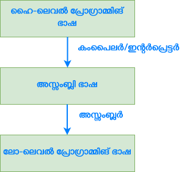

പൈത്തണ് ആമുഖം
- പൈത്തണ് ജനപ്രിയമായ പ്രോഗ്രാമ്മിങ് ഭാഷയാണ്.
- പൈത്തണ് സാധാരണ ഉപയോഗത്തിനുള്ള (General Purpose) പ്രോഗ്രാമ്മിങ് ഭാഷയാണ്.
- പൈത്തണ് ബൈറ്റ് കോഡ് തലത്തില് ഇന്റര്പ്രെട്ട് ചെയ്യുന്ന പ്രോഗ്രാമ്മിങ് ഭാഷയാണ്
പൈത്തണ്: ചരിത്രം
- പൈത്തന്റെ ഉപഞ്ജാതാവ് ഗൈഡോ വാന് റോസ്സം (Guido Van Rossum) ആണ്.

- പൈത്തണ് പ്രോഗ്രാമ്മിങ് ഭാഷയും മലമ്പാമ്പും (പൈത്തണ് എന്ന ഇംഗ്ലിഷ് വാക്കിന്റെ അര്ത്ഥം മലമ്പാമ്പ് എന്നാണ്) തമ്മില് യാതൊരു ബന്ധവും ഇല്ല. പൈത്തണ് പൈത്തണ് എന്ന് ഗൈഡോ വാന് റോസ്സം പേര് നല്കാന് കാരണം മോണ്ടി
പൈത്തണ്സ്ഫ്ലൈയിങ്ങ് സര്ക്കസ് എന്ന ബി.ബി.സി ചാനലിലെ പരിപാടിയോടുള്ള ഇഷ്ടമാണ്. - 1980-കളില് തന്നെ പൈത്തണ് നിര്മിക്കുവാന് റോസ്സം ആരംഭിച്ചിരുന്നു. എന്നാല് 1991-ല് ആണ് പൈത്തന്റെ ആദ്യ വേര്ഷനായ 0.9.0 റിലീസ് ആകുന്നത്. 2000-ല് ആണ് പൈത്തണ് 2.x വേര്ഷന് റിലീസ് ആകുന്നത്. 2008-ല് ആണ് പൈത്തന്റെ 3.x വേര്ഷന് റിലീസ് ആകുന്നത്.
- 2018 ജൂലൈ 12-ാം തീയതി വരെ പൈത്തണ് പ്രോജക്റ്റ് നോക്കിനടത്തിയിരുന്നത് ഗൈഡോ വാന് റോസ്സമാണ്. 2018 ജൂലൈ 12-ാം തീയതി മുതല് റോസ്സം പൈത്തണ് പ്രൊജെക്ടിന്റെ തലപ്പത്ത് നിന്നും സ്വയം വിരമിച്ചു. 2019 ജാനുവരി മുതല് റോസ്സത്തിന്റെ അഭാവത്തില് പൈത്തണ് പ്രൊജെക്ടുമായി ബന്ധപ്പെട്ട വിഷയങ്ങളില് തീരുമാനമെടുക്കുന്നത് പൈത്തണ് പ്രൊജെക്ടിന്റെ വളര്ച്ചയില് ഭാഗമായിരുന്ന കോര് ഡെവലപ്പര്മാരുടെ സംഘത്തില് നിന്നും തിരഞ്ഞെടുത്ത 5 പേര് അടങ്ങുന്ന സ്റ്റീറിംഗ് കമ്മിറ്റിയാണ്.
പൈത്തണ് സവിശേഷതകള്
- പൈത്തണ് ഒബ്ജക്റ്റ് ഓറിയന്റഡ് പ്രോഗ്രാമ്മിങ് ഭാഷയാണ്.
പൈത്തണില് എല്ലാം തന്നെ ഒബ്ജക്റ്റ് ആണ്.
-
പൈത്തണ് വളരെ ലളിതമാണ്
- പൈത്തണ് വളരെ ലളിതമായ ഒരു പ്രോഗ്രാമ്മിങ് ഭാഷയാണ്. അതിനാല് തന്നെ പഠിക്കുവാന് വളരെ എളുപ്പമാണ്. പൈത്തണില് വളരെ കുറച്ച് കീവേഡുകള് മാത്രമാണ് ഉള്ളൂ. കൂടാതെ ധാരാളം ബോയിലര്പ്ലേറ്റ് കോഡ് ഒഴിവാക്കപ്പെട്ടതിനാല് ലളിതമായ ഒരു ഘടന ആണ് പൈത്തണ് ഉള്ളത്.അതിനാല് തന്നെ തുടക്കക്കാരന് പൈത്തണ് എളുപ്പത്തില് പഠിക്കാനാകും.
-
വായിക്കാനാകുന്ന പരിപാലിക്കാനാവുന്ന കോഡ്
- ഒരു എഞ്ചിനീറിന് പൈത്തണ് കോഡ് എളുപ്പത്തില് വായിക്കാനും പരിപാലിക്കാനും കഴിയും. കോഡിനെ മോഡ്യൂളുകള് ആയും പാക്കേജുകള് ആയും എഴുതുന്നതു പരിപാലനം എളുപ്പമാക്കുന്നു.
-
ഓപ്പണ് സോര്സ് ആണ്
- പൈത്തണ് ഗ്നു പബ്ലിക് ലൈസന്സിന് (Gnu Public License - GPL) കീഴില് ഓപ്പണ് സോര്സ് ആണ്.
-
വിശാലമായ സ്റ്റാന്ഡേര്ഡ് ലൈബ്രറി
- ഒരു ഡെവെലപ്പര് നിത്യജീവിതത്തില് കുറെയധികം സമയം ചെലവഴിച്ചു ചെയ്യേണ്ടുന്ന ജോലികള് എളുപ്പത്തില് ചെയ്യാന് കഴിയുന്ന വിധം വിശാലമായ സ്റ്റാന്ഡേര്ഡ് ലൈബ്രറി ഉള്ളതിനാല് പൈത്തണ് ബാറ്ററിയോട് കൂടിയത് (Batteries Included) എന്നാണ് അറിയപ്പെടുന്നത്. ഈ ലൈബ്രറികള് പോര്ട്ടബിള് ആണ്, ക്രോസ്സ്-പ്ലാറ്റ്ഫോം ആണ്.
-
ഡൈനാമിക്കലി ടൈപ്ഡ് ആണ്
- പൈത്തണില് ഡാറ്റടൈപ്പുകള് മുന്കൂട്ടി നിശ്ചയിക്കേണ്ട ആവശ്യമില്ല. പൈത്തണ് റണ് ടൈമില് ഡാറ്റാടൈപ്പുകള് കൃത്യമായി നമുക്ക് വേണ്ടി നിര്ണയിക്കും.
-
കൂട്ടിച്ചേര്ക്കലുകള്ക്ക് വിധേയമാക്കാം
- കുറച്ചു കൂടി മെച്ചപ്പെട്ട വേഗതയും പ്രകടനവുമുള്ള സി, സി++, ജാവ തുടങ്ങിയ പ്രോഗ്രാമ്മിങ് ഭാഷകള് പൈത്തനോടൊപ്പം ഉപയോഗിക്കാം. ഇത് പൈത്തന്റെ കാര്യക്ഷമത വര്ദ്ധിപ്പിക്കാനായും ഉപയോഗിക്കാം. അതായത് മറ്റ് പ്രോഗ്രാമ്മിങ് ഭാഷകളോടൊപ്പം ഉള്ള ഇന്റര്ഓപ്പറബിലിറ്റി സാധ്യമാണ്.
-
വിപുലീകരിക്കാം
- ഷെല് സ്ക്രിപ്റ്റിങ് എന്നതിലുപരി വളരെ വലിയ ആപ്ലിക്കേഷനുകള് നിര്മിക്കാനും പൈത്തണ് പ്രയോജനപ്പെടുത്താം. അതായത് പൈത്തണ് ഒരു സ്ക്രിപ്റ്റിങ് ലാംഗ്വേജ് ആയി ഉപയോഗിക്കാം. കൂടാതെ വളരെ വലിയ ആപ്ലിക്കേഷനുകള് ബൈറ്റ് കോഡിലേക്ക് കംപൈല് ചെയ്ത്കൊണ്ട് കാര്യക്ഷമമായി പ്രവര്ത്തിക്കാനും പൈത്തണ് പ്രോഗ്രാമ്മിങ് ഉപയോഗിച്ച് സാധ്യമാണ്.
-
ഗാര്ബേജ് കളക്ഷനെക്കുറിച്ച് പ്രോഗ്രാമ്മര് ചിന്തിക്കേണ്ടതില്ല:
- പൈത്തണ്, പ്രോഗ്രാമ്മര് പ്രോഗ്രാമില് വരും സമയങ്ങളില് ഉപയോഗിയ്ക്കാത്ത ഒബ്ജെക്ടുകള് മെമ്മറിയില് നിന്നു നീക്കം ചെയ്തു മെമ്മറി കാര്യക്ഷമമായി കൈകാര്യം ചെയ്യുന്നു.
പൈത്തണ് 3 ഇന്സ്റ്റോളേഷന്
വിന്ഡോസ്
വിന്ഡോസ് മെഷീനുകളില് പൈത്തണ് ഇന്സ്റ്റോള് ചെയ്യാന് വളരെ എളുപ്പമാണ്. പൈത്തന്റെ ഒഫീഷ്യല് വെബ്സൈറ്റ് സന്ദര്ശിക്കുക. ഡൌണ്ലോഡ്സ് (Downloads) എന്ന മെനുവില് മൌസ് ഹോവര് ചെയ്യുക. നിങ്ങള്ക്ക് അവിടെ നിന്നും ഏറ്റവും പുതിയ പൈത്തണ് വേര്ഷന് ഡൌണ്ലോഡ് ചെയ്യാവുന്നതാണ്. നിങ്ങള്ക്ക് പഴയ പൈത്തണ് വേര്ഷന് ആണ് വേണ്ടത് എങ്കില് View the full list of downloads എന്ന കണ്ണിയില് ക്ലിക്ക് ചെയ്യുക.
ഇപ്പോള് നിങ്ങള് https://www.python.org/downloads എന്ന വെബ് പേജിലേക്ക് നീങ്ങുന്നതാണ്. അവിടെ നിന്നും നിങ്ങള്ക്ക് പൈത്തണ് എക്സിക്യൂട്ടബിള് ഡൌണ്ലോഡ് ചെയ്യാവുന്നതാണ്.
- പൈത്തണ് എക്സിക്യൂട്ടബിള് ഡൌണ്ലോഡ് ചെയ്തതിന് ശേഷം ഡൌണ്ലോഡ്സില് ഉള്ള പൈത്തണ് എക്സിക്യൂട്ടബിള് ഫയലില് ഡബിള് ക്ലിക്ക് ചെയ്യുക.

- അപ്പോള് തുറന്നു വരുന്ന റണ് ഡയലോഗ് ബോക്സിലെ റണ് ബട്ടണില് ക്ലിക്ക് ചെയ്യുക

- അടുത്തതായി തുറന്നുവരുന്ന ഇന്സ്റ്റോളേഷന് സെറ്റപ്പ് വിസാര്ഡില്
Add Python to PATHഎന്നുള്ള ചെക്ബോക്സ് ചെക്ക് ചെയ്യുക. അതിനുശേഷം മാത്രം Install Now ക്ലിക്ക് ചെയ്യുക.
- ഇന്സ്റ്റോളേഷന് ശേഷം കമാന്ഡ് പ്രോംപ്റ്റ് തുറക്കുക. അതിന് ശേഷം ചുവടെയുള്ള കമാന്ഡ് അടിക്കുക:
python --version
നിങ്ങള്ക്ക് ലഭിക്കുന്ന ഔട്ട്പുട്ട് ചുവടെ കാണുന്ന രീതിയില് നിങ്ങള് ഇന്സ്റ്റോള് ചെയ്ത വേര്ഷന് ആണെങ്കില് പൈത്തണ് നിങ്ങളുടെ സിസ്റ്റത്തില് വിജയകരമായി ഇന്സ്റ്റോള് ആയിട്ടുണ്ട്.
Python 3.9.2
ലിനക്സ് ഡിസ്ട്രിബ്യൂഷന്
മിക്കവാറും ലിനക്സ് ഡിസ്ട്രിബ്യൂഷനുകളില് പൈത്തണ് 2-ഉം പൈത്തണ് 3-യും പ്രീഇന്സ്റ്റോള്ഡ് ആയിരിയ്ക്കും. നിങ്ങളുടെ സിസ്റ്റത്തില് പൈത്തണ് 3 ഇന്സ്റ്റോള് ചെയ്തിട്ടുണ്ട് എന്ന് ഉറപ്പ് വരുത്താനായി
python3 --version
എന്ന കമാന്ഡ് ഉപയോഗിക്കുക. നിങ്ങളുടെ സിസ്റ്റത്തില് ഇന്സ്റ്റോള് ആയിരിക്കുന്ന പൈത്തണ് വേര്ഷന് ചുവടെയുള്ളത് പോലെ കാണാന് ആകുന്നുണ്ട് എങ്കില് പൈത്തണ് സിസ്റ്റത്തില് മുന്നേ ഇന്സ്റ്റോള് ചെയ്തതാണ്.
Python 3.9.2
python --vesion എന്ന കമാന്ഡ് വിന്ഡോസ് സിസ്റ്റത്തില് ഉപയോഗിച്ചതിന് പകരം ഇവിടെ python3 --vesion എന്ന കമാന്ഡ് ഉപയോഗിക്കാനുള്ള കാരണം ലിനക്സ് ഡിസ്ട്രിബ്യൂഷനുകളില് പൈത്തണ് 2-ഉം ചിലപ്പോള് പ്രീഇന്സ്റ്റോള് ആയിരിക്കാനുള്ള സാധ്യത ഉണ്ട്. അതിനാല് തന്നെ python എന്ന കമാന്ഡ് പൈത്തണ് 2-വിനെയും python3 എന്നത് പൈത്തണ് 3-നെയുമാണ് സൂചിപ്പിക്കുന്നത്.
ലിനക്സ് ഡിസ്ട്രിബ്യൂഷനുകളില്
python 3-യ്ക്കുpythonഎന്ന മറ്റൊരു പേര് കമാന്ഡ് ലൈനില് ഉപയോഗിക്കാനായി ബാഷ് പ്രൊഫൈലില് (.bashrc ഫയലില്) എലിയാസ് (alias) അഥവാ മറ്റൊരു പേര് നിര്മിക്കണം. അത് ചര്ച്ചയ്ക്ക് പുറത്തുള്ള കാര്യമായതിനാല് നിങ്ങള് സ്റ്റാക്ക് ഒവേര്ഫ്ലോയിലെ ഈ ചോദ്യവും ഉത്തരവും പരിശോധിയ്ക്കുക.
എന്നാല് മറ്റൊരു ഔട്ട്പുട്ട് ആണ് ഈ കമാന്ഡ് നല്കുന്നത് എങ്കില് നിങ്ങള്ക്ക്
sudo apt-get install python3.x
എന്ന കമാന്ഡ് ഉപയോഗിച്ച് പൈത്തണ് ഇന്സ്റ്റോള് ചെയ്യാം. **ഇവിടെ 3.x-ലെ x പ്രതിനിധീകരിക്കുന്നത് പൈത്തണ് മേജര് വേര്ഷന് ആണെന്ന് ഓര്ക്കുക. ഉദാഹരണാമായി:
sudo apt-get install python3.8
മാക്
ക്ഷമിയ്ക്കുക, ഞാന് ഇതേ വരെ മാക് സിസ്റ്റം ഉപയോഗിച്ചിട്ടില്ല. ഉപയോഗിച്ചിട്ടുള്ളവര്ക്ക് ഇന്സ്റ്റോള് ചെയ്യേണ്ടത് എങ്ങനെയെന്ന് പറയാം. നിങ്ങള്ക്കും ഈ എഴുത്ത് പൂര്ണമാക്കാന് സഹകരിക്കാവുന്നതാണ്.
ഓര്ത്ത് വെക്കാന്
പൈത്തന്റെ ഒഫീഷ്യല് വെബ്സൈറ്റില് നിന്നും ഡൌണ്ലോഡ് ചെയ്യുന്ന ഈയൊരു പൈത്തണ് സി പ്രോഗ്രാമ്മിങ് ഭാഷ ഉപയോഗിച്ച് നിര്മിച്ചതാണ്. ഇത് സി പൈത്തണ് (CPython) എന്നാണ് അറിയപ്പെടുന്നത്. ഇതേപ്പോലെ തന്നെ മറ്റ് പ്രോഗ്രാമ്മിങ് ഭാഷകള് ഉപയോഗിച്ച് നിര്മിച്ചിരിക്കുന്ന പൈത്തണ് ഇംപ്ലിമെന്റേഷനുകള് ഏതൊക്കെയാണെന്ന് താഴെ പട്ടികപ്പെടുത്തിയിട്ടുണ്ട്.
| പ്രോഗ്രാമ്മിങ് ഭാഷ | പൈത്തണ് ഇംപ്ലിമെന്റേഷന് |
|---|---|
| സി | സി പൈത്തണ് (CPython) |
| ജാവ | ജെ പൈത്തണ് (JPython) |
| സി# | അയണ് പൈത്തണ് (Iron Python) |
| റസ്റ്റ് | റസ്റ്റ് പൈത്തണ് (Rust Python) |
പൈത്തണ് പ്രോഗ്രാം റണ് ചെയ്യുന്നതെങ്ങനെ?
1. ഇന്ററാക്ടീവ് ഇന്റര്പ്രെട്ടര്
ഇന്ററാക്ടീവ് ഇന്റര്പ്രെട്ടര് ഉപയോഗിക്കാനായി നിങ്ങള്ക്ക് വിന്ഡോസില്
python
എന്ന കമാന്ഡ് ഉപയോഗിക്കാം. ലിനക്സ് ഡിസ്ട്രിബ്യൂഷനുകളില്
python3
എന്ന കമാന്ഡും ഉപയോഗിക്കാവുന്നതാണ്.
കമാന്ഡ് ഉപയോഗിച്ച് കഴിയുമ്പോള് ചുവടെക്കാണുന്ന രീതിയില് ഇന്ററാക്ടീവ് ഇന്റര്പ്രെട്ടര് ഓപ്പണ് ആകുന്നതാണ്.
F:\MyPythonBook\PythonPointsToPonder>python
Python 3.9.6 (tags/v3.9.6:db3ff76, Jun 28 2021, 15:26:21) [MSC v.1929 64 bit (AMD64)] on win32
Type "help", "copyright", "credits" or "license" for more information.
>>>
ഈ റൈറ്റ് ആരോ >>> കാണുന്ന സ്ഥലത്തു നിങ്ങള്ക്ക് പ്രോഗ്രാം വരി വരിയായി എഴുതാവുന്നതാണ്. ഈ മൂന്ന് ആരോകള് നിങ്ങള് ഇന്ററാക്ടീവ് ഇന്റര്പ്രെട്ടറില് ആണെന്ന് സൂചിപ്പിക്കുന്നു. നിങ്ങള് ഇവിടെ പ്രോഗ്രാമ്മിന്റെ ഓരോ വരിയെഴുതി എന്റര് കീ അമര്ത്തുമ്പോളും ആ ലൈനിന്റെ ഔട്ട്പുട്ട് താഴെത്തന്നെ കാണാനാകും. എന്നാല് ഒരു കോഡ് ബ്ലോക്ക് ആണ് നിങ്ങള് എഴുത്തുന്നത് എങ്കില് ആ ബ്ലോക്ക് തീര്ന്നിട്ടില്ല എന്ന് കാട്ടുവാന് ഇന്റര്പ്രെട്ടറില് എലിപ്സിസ് അഥവാ ... ആണ് ഉപയോഗിക്കുന്നത്.
ഉദാഹരണമായി
>>> print("Hello world")
Hello world
നിങ്ങള്ക്ക് print("Hello world") എന്ന സ്റ്റേറ്റ്മെന്റ് റണ് ചെയ്തതിന്റെ ഭാഗമായി Hello world എന്ന ഔട്ട്പുട്ട് കാണാവുന്നതാണ്.
>>> a = True
>>> if a:
... print("Hello")
...
Hello
മുകളില് if എന്ന കണ്ടീഷണല് ബ്ലോക്ക് തുടങ്ങിയതിന്റെ ഭാഗമായി നിങ്ങള്ക്ക് എലിപ്സിസ് (...) കാണാവുന്നതാണ്.
2. പൈത്തണ് സ്ക്രിപ്റ്റ് റണ് ചെയ്യുന്നതെങ്ങനെ?
- സ്ക്രിപ്റ്റ്
.pyഎക്സ്റ്റെന്ഷനില് ഉള്ള ഫയല് ആയി സേവ് ചെയ്യുക. - വിന്ഡോസ് ആണ് ഉപയോഗിക്കുന്നത് എങ്കില്
python ...path\name_of_script.py
എന്ന കമാന്ഡ് ഉപയോഗിച്ച് സ്ക്രിപ്റ്റ് റണ് ചെയ്യാവുന്നതാണ്.
മറിച്ച് ലിനക്സ് ആണ് ഉപയോഗിക്കുന്നത് എങ്കില്
python3 .../path/name_of_script.py
പ്രോഗ്രാമ്മിങ് അടിസ്ഥാന പദസംഹിത
ഐഡന്റിഫയര് (Identifier)
ഐഡന്റിഫയറുകള് എന്നാല് വേരിയബിള്, ഫംഗ്ഷന്, ക്ലാസ്, മൊഡ്യൂള്, ഒബ്ജെക്ടുകള് തുടങ്ങിയവയ്ക്ക് പ്രോഗ്രാമ്മര് നല്കുന്ന പേരാണ്. പൈത്തണ് കേസ് സെന്സിറ്റീവ് (case sensitive) ആണ്. അതായത് ഇംഗ്ലിഷ് അക്ഷരമാലയിലെ ചെറിയക്ഷരങ്ങളെയും (Lower case letter) വലിയക്ഷരങ്ങളെയും (Upper Case Letter) വ്യത്യസ്ഥമായ അക്ഷരങ്ങള് ആയാണ് പൈത്തണ് കണക്കാക്കുന്നത്. ഐഡന്റിഫയറുകള് ചുവടെപ്പറയുന്ന നിയമങ്ങള് അനുസരിക്കണം:
- ഐഡന്റിഫയറുകളില് ചെറിയക്ഷരങ്ങളോ ([a-z]) വലിയക്ഷരങ്ങളോ ([A-Z]) അണ്ടര്സ്കോറോ (_) അക്കങ്ങളോ (0-9) ആണ് ഉപയോഗിക്കാവൂ. total എന്നുള്ളതും Total എന്നുള്ളതും രണ്ട് വ്യത്യസ്ഥങ്ങളായ ഐഡന്റിഫയര് ആണെന്ന് ഓര്മിക്കുമല്ലോ.
- പൈത്തണ് നീക്കിവെച്ചിരിക്കുന്ന കീവേഡുകള് ഐഡന്റിഫയര് ആയി ഉപയോഗിക്കരുത് (കീവേഡുകള് തൊട്ടടുത്ത ഭാഗത്ത് തന്നെ ചര്ച്ച ചെയ്യുന്നുണ്ട്).
- ഐഡന്റിഫയര് അക്കങ്ങളില് തുടങ്ങരുത്. ഉദാഹരമായി
2timesഎന്നുള്ളത് അസാധുവായ ഒരു ഐഡന്റിഫയര് ആണ്. - @, !, #, $, %, ^, എന്നിങ്ങനെയുള്ള ചിഹ്നങ്ങള് ഐഡന്റിഫയറില് ഉപയോഗിക്കരുത്. ഉദാഹരണമായി #total എന്നുള്ളത് അസാധുവായ ഒരു ഐഡന്റിഫയര് ആണ്.
- ഐഡന്റിഫയറിന് എത്ര നീളവും ആകാം.
ആദ്യം പറഞ്ഞിരിക്കുന്ന നിയമത്തില് ഒരു തിരുത്ത് ഉണ്ട്. ഇംഗ്ലിഷ് ബുക്കുകള് ആണ് വിപണിയില് ലഭ്യം. അതിനാല് ആണ് മിക്കവാറും ബുക്കുകളില് ഐഡന്റിഫയര് ഇങ്ങനെയാകണം എന്നൊരു ലിഖിതമായ നിയമം നിലനില്ക്കുന്നത്. എന്നാല് സത്യമെന്തെന്നാല് നമുക്ക് യൂണീക്കോഡില് എഴുതപ്പെട്ട ഏത് അക്ഷരവും വാക്കുകളും പൈത്തണ് ഐഡന്റിഫയര് ആയി ഉപയോഗിക്കാം. ഉദാഹരണമായി ചുവടെയുള്ള കോഡ് ശ്രദ്ധിയ്ക്കുക. മലയാളം വാക്കുകള് ചുവടെ ഐഡന്റിഫയര് ആയി ഉപയോഗിച്ചിരിക്കുന്നത് നിങ്ങള്ക്ക് കാണാന് ആകുന്നതാണ്. നിങ്ങള്ക്ക് പ്രതീക്ഷിച്ച ഔട്ട്പുട്ട് ചുവടെയുള്ള പ്രോഗ്രാമ്മില് നിന്നും ലഭിക്കുന്നുണ്ട് എന്ന് നിങ്ങള്ക്ക് വിലയിരുത്താവുന്നതാണ് (ഈയൊരു കാര്യം വിലയിരുത്തുന്നതിന് മുമ്പ് ടെര്മിനല്/ കമാന്ഡ് പ്രോംപ്റ്റ്/ കോഡ് എഡിറ്റര്/ ഐ.ഡി.എല്.ഇ തുടങ്ങിയവ മലയാളം യൂണീക്കോഡ് പിന്തുണയുള്ള ഒരു ഫോണ്ടിലേക്ക് മാറ്റുന്നത് നന്നായിരിക്കും.).
പച്ച_മാങ്ങ = 10
പഴുത്ത_മാങ്ങ = 20
ആകെ_മാങ്ങ = പച്ച_മാങ്ങ + പഴുത്ത_മാങ്ങ
print(ആകെ_മാങ്ങ)
പൈത്തണ് ഐഡന്റിഫയറുകളുടെ പേരില് ലോകത്താകെയുള്ള പ്രോഗ്രാമ്മര്മാര് പിന്തുടരുന്ന കുറച്ചു ആചാരങ്ങള് (conventions) ഉണ്ട്. അത് ചുവടെ ചര്ച്ച ചെയ്യുന്നു:
- ക്ലാസ്സിന്റെ പേര് ഇംഗ്ലിഷ് വലിയക്ഷരത്തില് തുടങ്ങണം. മറ്റെല്ലാ ഐഡന്റിഫയറുകളുടെയും പേരിനായി ഇംഗ്ലിഷിലെ ചെറിയക്ഷരങ്ങള് ഉപയോഗിക്കണം.
- ഐഡന്റിഫയര് തുടങ്ങുന്നത് ഒറ്റ അണ്ടര്സ്കോറില് ആണെങ്കില് അത് പ്രൈവറ്റ് ആണ്. ഉദാഹരണമായി _data.
- ഐഡന്റിഫയര് തുടങ്ങുന്നത് രണ്ട് അണ്ടര്സ്കോറില് ആണെങ്കില് അത് സ്ട്രോങ്ലി പ്രൈവറ്റ് ആണ്. ഉദാഹരണമായി __protected_data.
- ഒരു ഐഡന്റിഫയറിന്റെ തുടക്കത്തിലും ഒടുക്കത്തിലും രണ്ട് അണ്ടര്സ്കോര് ഉണ്ടെങ്കില് അത് പൈത്തണ് സ്വന്തം പ്രവര്ത്തനങ്ങള്ക്കായി നീക്കിവെച്ചിരിക്കുന്ന ഐഡന്റിഫയര് ആയിരിയ്ക്കും. ഉദാഹരണം
__init__.
കീവേഡുകള് (Keywords)
- പ്രോഗ്രാമ്മിങ് ഭാഷകളില് അതാതിന് മാത്രം ഉപയോഗിക്കാനായി നീക്കിവെച്ചിരിക്കുന്ന പ്രോഗ്രാമ്മറിന് ഐഡന്റിഫയര് ഉപയോഗിക്കാനാവാത്ത ചില പദങ്ങളാണ് കീവേഡുകള്. പൈത്തണ് 3.9-ല് 36 കീവേര്ഡുകള് ഉണ്ട്. പൈത്തണിലെ കീവേര്ഡുകള് കാണുവാനായി:
>>> import keyword
>>> keyword.kwlist
['False', 'None', 'True', '__peg_parser__', 'and', 'as', 'assert', 'async', 'await', 'break', 'class', 'continue', 'def', 'del', 'elif', 'else', 'except', 'finally', 'for', 'from', 'global', 'if', 'import', 'in', 'is', 'lambda', 'nonlocal', 'not', 'or', 'pass', 'raise', 'return', 'try', 'while', 'with', 'yield']
>>> len(keyword.kwlist)
36
മുകളിലെ ഓരോ കീവേര്ഡും നമ്മള് വിശദമായി ഈയൊരു പുസ്തകത്തിന്റെ പല ഭാഗങ്ങളിലായി ചര്ച്ച ചെയ്യുന്നതാണ്. ചുവടെയുള്ള പട്ടികയിലും കീവേഡുകള് നല്കിയിട്ടുണ്ട്.
| False | None | True | __peg_parser__ | and | as | assert |
| async | await | break | class | continue | def | del |
| elif | else | except | finally | for | from | global |
| if | import | in | is | lambda | nonlocal | not |
| or | pass | raise | return | try | while | with |
| yield |
വേരിയബിള്
നമ്മള് പ്രോഗ്രാമ്മില് ഉപയോഗിയ്ക്കുന്ന എല്ലാ വിവരങ്ങളും ഒബ്ജെക്ടുകളും നമ്മുടെ കംപ്യൂട്ടറിന്റെ റാമില് ആയിരിയ്ക്കും സൂക്ഷിക്കപ്പെടുന്നത്. റാമിലേ ഈ ഡാറ്റ കൈകാര്യം ചെയ്യണം എങ്കില് നമുക്ക് ഡാറ്റ സൂക്ഷിക്കപ്പെടുന്ന മെമ്മറി ലൊക്കേഷന്റെ അഡ്രസ്സ് അറിഞ്ഞിരിക്കണം. ഈ അഡ്രസ്സ് ഒരു പ്രോഗ്രാമ്മറിനെ സംബദ്ധിച്ച് ഓര്ത്തിരിക്കേണ്ടുന്ന ആവശ്യമില്ല. അപ്പോള് മെമ്മറി ലൊക്കേഷന്റെ ഈ അഡ്രസ്സിന് പകരം പ്രോഗ്രാമില് പ്രോഗ്രാമ്മാറിന് എളുപ്പത്തില് ഓര്മയില് സൂക്ഷിക്കാന് പറ്റുന്ന പേരുകള് അഥവാ ഐഡന്റിഫയറുകള് ഉപയോഗിക്കാം. ഇങ്ങനെ മെമ്മറി അഡ്രസ്സിന് പകരം ഉപയോഗിയ്ക്കുന്ന പേരുകള് ആണ് വേരിയബിളുകള്.
- പൈത്തണിലെ വേരിയബിളുകള് നിങ്ങള് രാവിലെ ചായ കുടിക്കുന്ന കപ്പ് പോലെയാണ്. നിങ്ങള്ക്ക് കുറച്ചു കഴിയുമ്പോള് ആ കപ്പില് കഞ്ഞിവെള്ളം കുടിക്കാം, പിന്നീട് ജ്യൂസ് കുടിക്കാം, കല്ല് നിറക്കാം 😜. അതായത് പൈത്തണ് വേരിയബിളില് നിങ്ങള്ക്ക് എന്ത് വേണമെങ്കിലും സംഭരിക്കാം. പൈത്തണ് വേരിയബിളില് നമുക്ക് ഏത് ഡാറ്റടൈപ്പ് വേണമെങ്കിലും സംഭരിക്കാം. എന്താണ് ഞാന് ഇങ്ങനെ പറയാന് കാരണം എന്ന് കൂടുതല് വ്യക്തമായി നിങ്ങള്ക്ക് വഴിയേ മനസ്സിലാകും.
വേരിയബിള് അസ്സൈന്മെന്റ്
പൈത്തണില് വേരിയബിള് അസ്സൈന് ചെയ്യുന്നത് ചുവടെക്കാണുന്ന രീതിയില് ആണ്:
>>>num = 10
- ഇവിടെ
numഎന്നതാണ് വേരിയബിള്. num പോയിന്റ് ചെയ്യുന്നത് ഒരു മെമ്മറി ലൊക്കേഷനിലേക്ക് ആയിരിയ്ക്കും. ഈ മെമ്മറി ലൊക്കേഷന് കാണുവാന് നിങ്ങള്ക്ക്idഎന്ന ബില്റ്റിന് ഫംഗ്ഷന് ഉപയോഗിക്കാവുന്നതാണ്.
>>>id(num)
2314464488016
>>>
- ഇവിടെ
=എന്നത് ഗണിതത്തില് പരിചിതമായ സമം ആണെന്ന് തെറ്റിദ്ധരിക്കരുത്. ഇത് വലതു വശത്തുള്ള 10 എന്ന വാല്യൂ ഇടതു വശത്തെnumഎന്ന വേരിയബിളിലേക്ക് ആരോപിക്കുകയാണ് (assign) ചെയ്യുന്നത്.
കമെന്റ്
നമ്മള് ഇന്നെഴുതുന്ന പ്രോഗ്രാം വളരെ നാളുകള്ക്ക് ശേഷം നോക്കുമ്പോള് നമ്മള് എന്ത് ഉദ്ദേശത്തിലാണ് എഴുതിയത് എന്ന് മനസ്സിലാക്കുക പ്രയാസമായിരിക്കും. ഈയൊരു പ്രശ്നം പരിഹരിക്കുകയാണ് പ്രോഗ്രാമ്മിലെ കമെന്റിന്റെ പ്രാഥമിക ലക്ഷ്യം. നമ്മള് എഴുതുന്ന പ്രോഗ്രാമ്മില് നമുക്ക് ഓരോ ലൈനും എന്ത് ഉദ്ദേശത്തിലാണ് എഴുതിയതെന്ന് പ്രോഗ്രാമ്മിന്റെ കൂടെ തന്നെ നമുക്ക് എഴുതാം. ഇങ്ങനെ എഴുതുന്ന കമെന്റുകള് പൈത്തണ് ഇന്റര്പ്രെട്ടര് റീഡ് ചെയ്യുന്നത് ഒഴിവാക്കുന്നതിനാല് കമെന്റുകള് പ്രോഗ്രാമ്മിന്റെ പ്രവര്ത്തനത്തെ യാതൊരു തരത്തിലും ബാധിക്കില്ല. പൈത്തണില് കമെന്റ് ആയി എഴുതുന്ന ഓരോ വരിക്കും മുന്നില് # ചിഹ്നം കൊടുക്കേണ്ടതാണ്.
# here sum is initialized to zero
sum = 0
- പ്രോഗ്രാമ്മാറിന് പ്രോഗ്രാമ്മിലെ ലൈനുകള് എക്സിക്യൂട്ട് ചെയ്യേണ്ടുന്ന ആവശ്യം ഇല്ല എന്നു തോന്നുന്ന പക്ഷം ആ ഒരു ലൈനിന്റെ മുമ്പില്
#ഇട്ടുകൊണ്ട് ആ ലൈന് എക്സിക്യൂട്ട് ചെയ്യുന്നത് ഒഴിവാക്കാവുന്നതാണ്.
ഡോക്സ്ട്രിംഗ്
ഒന്നിലധികം ലൈനുകളില് ആയി കമെന്റ് എഴുതേണ്ട സാഹചര്യങ്ങളില്, അതായത് ഒരു ഫംഗ്ഷനെപ്പറ്റിയോ ക്ലാസ്സിനെപ്പറ്റിയോ വിപുലമായ ഒരു നോട്ട് എഴുതേണ്ടുന്ന സാഹചര്യത്തില് ആണ് ഡോക്സ്ട്രിംഗ് ഉപയോഗിക്കുന്നത്. ചുവടെയുള്ള കോഡില് മൂന്ന് ഉദ്ധരണികള്ക്ക് (""") ഉള്ളില് എഴുതിയിരിക്കുന്നതാണ് ഡോക്സ്ട്രിംഗ്.
def square(num, ret=True):
"""
The input parameters of function is `num` and `ret`.
The `ret` is by default `True`. If `ret` is `True` function returns
the square of number. Otherwise it will print out on console
"""
if ret:
return num ** 2
print(f"{num}^2 = {num ** 2}")
square(5)
square(5, ret=False)
ഡോക്സ്ട്രിംഗ് എഴുത്തുന്നതിന്റെ പ്രധാന മെച്ചം കോഡ് എഡിറ്റര് അല്ലെങ്കില് ഐ.ഡി.എല്.ഇ-കളില് (IDLE) നമ്മള് എഴുതിയ ഫംഗ്ഷന് മുകളില് മൌസ് ഹോവര് ചെയ്യുമ്പോള് ഈയൊരു ഡോക്സ്ട്രിംഗ് കാണാന് ആകും (ചവടെയുള്ള ചിത്രം നിരീക്ഷിക്കുക). ഈയൊരു കാര്യം നമ്മള് എഴുതിയ കോഡ് മറ്റുള്ളവര് നോക്കുമ്പോള് അവര്ക്ക് ആ ഒരു ഫംഗ്ഷനെക്കുറിച്ച് വളരെ എളുപ്പത്തില് മനസ്സിലാക്കാന് പ്രയോജനപ്പെടും.

കൂടാതെ help ഫംഗ്ഷന്റെ സഹായത്തോടെ ഇന്ററാക്ടീവ് ഇന്റര്പ്രെട്ടറില് നമുക്ക് ഈ ഫങ്ഷന്റെ ഡോക്യുമെന്റേഷന് ചുവടെ നല്കിയിരിക്കുന്നത് പോലെ കാണാവുന്നതാണ്.
F:\MyPythonBook\PythonPointsToPonder>python
Python 3.9.6 (tags/v3.9.6:db3ff76, Jun 28 2021, 15:26:21) [MSC v.1929 64 bit (AMD64)] on win32
Type "help", "copyright", "credits" or "license" for more information.
>>> from test import square
5^2 = 25
>>> help(square)
Help on function square in module test:
square(num, ret=True)
The input parameters of function is `num` and `ret`.
The `ret` is by default `True`. If `ret` is `True` function returns
the square of number. Otherwise it will print out on console
>>> അധിക വായനക്ക്
പ്രോഗ്രാമ്മിങ് ഭാഷ (Programming Language): കമ്പ്യൂട്ടറിനെക്കൊണ്ട് നമുക്കാവശ്യമായ പ്രവര്ത്തികള് ചെയ്യാനാവശ്യമായ നിര്ദേശങ്ങള് പ്രത്യേക വ്യാകരണ നിയമങ്ങള്ക്കും പദഘടനയ്ക്കും (syntax) അനുസൃതമായി എഴുതുകയും അതുപയോഗിച്ചു കമ്പ്യൂട്ടറുമായി ആശയ വിനിമയം നടത്തുകയുമാണ് പ്രോഗ്രാമ്മിങ് ഭാഷകള് ചെയ്യുന്നത്.
മെഷീന് ഭാഷ (Machine Language): കംപ്യൂട്ടറിന്റെ പ്രോസസ്സര് വിവരങ്ങള് മനസ്സിലാക്കുകയും വിവരങ്ങള്ക്കുമേല് പ്രവര്ത്തിക്കുകയും ചെയ്യുന്നത് ദ്വയാങ്ക സംഖ്യാ സമ്പ്രദായം (Binary Number System) അധിഷ്ഠിതമാക്കിയാണ്. അതിനാല് തന്നെ കമ്പ്യൂട്ടര് പ്രവര്ത്തിക്കാന് ആവശ്യമായ നിര്ദേശങ്ങളും വിവരങ്ങളും ദ്വയാങ്ക സംഖ്യകള് ആയിരിക്കണം. ഇത്തരത്തില് ദ്വയാങ്ക സംഖ്യകള് മാത്രം അടങ്ങിയ നിര്ദേശങ്ങളും വിവരങ്ങളും പരസ്പരം മാറിപ്പോകാതെ പ്രവര്ത്തിക്കണം എങ്കില് അതിന് പ്രത്യേക നിയമങ്ങള് പാലിക്കണം. ഇത്തരം നിയമങ്ങള്ക്ക് അനുസൃതമായി ദ്വയാങ്ക സംഖ്യാ സമ്പ്രദായത്തില് പ്രവര്ത്തിക്കുന്ന ഭാഷയാണ് മെഷീന് ഭാഷ.
അസ്സംബ്ലി ഭാഷ (Assebly Language): മുകള്പ്പറഞ്ഞ രീതിയില് നിര്ദേശങ്ങളും വിവരങ്ങളും ദ്വയാങ്ക സംഖ്യകള് ഉപയോഗിച്ച് കൈകാര്യം ചെയ്യുക എളുപ്പമുള്ള കാര്യമല്ല. അതിനാല് നിര്ദേശങ്ങളും വിവരങ്ങളും ഓര്മയില് സൂക്ഷിക്കാന് പ്രോഗ്രാമ്മാറിന് ഇംഗ്ലിഷ് പോലുള്ള ഭാഷകളിലെ പദങ്ങളുടെ സഹായം ആവശ്യമാണ്. ഇത്തരത്തില് പദങ്ങളെ ആണ് നെമോണിക്സ് (Mnemonics) എന്ന് പറയുന്നത്. ഈ നേമോണിക്സുകളുടെയും ഹെക്സാഡെസിമല് സംഖ്യകളുടെയും സഹായത്തോടെ മെഷീന് ഭാഷയ്ക്ക് ഒരു പുതിയ മാനം കൈവന്നു. ഇതാണ് അസ്സംബ്ലി ഭാഷ.
ഹൈ-ലെവല് പ്രോഗ്രാമ്മിങ് ഭാഷ (High-level Language): ഹൈ-ലെവല് പ്രോഗ്രാമ്മിങ് ഭാഷ ഇംഗ്ലിഷ് പോലെ തന്നെയുള്ള പദഘടന പ്രോഗ്രാമ്മിന് നല്കുന്നു. അതിനാല് തന്നെ ഇതിന്റെ വ്യാകരണം പ്രോഗ്രാമ്മെറിന് ഓര്ത്തിരിക്കാന് പ്രോഗ്രാമറിന് വളരെ എളുപ്പമാണ്.
ബൈറ്റ്കോഡ് (Bytecode): ഹൈ-ലെവല് പ്രോഗ്രാമ്മിങ് ഭാഷയുടെയും മഷീന് ലെവല് പ്രോഗ്രാമ്മിങ് ഭാഷയുടെയും ഇടയിലുള്ള പ്ലാറ്റ്ഫോമിനെ ആശ്രയിക്കാതെ (platform independent) ആയി പ്രവര്ത്തിക്കുന്ന കോഡ് ആണ് ബൈറ്റ്കോഡ് (Bytecode)
ട്രാന്സ്ലേറ്ററുകള് (കംപൈലര്, ഇന്റര്പ്രെട്ടര്, അസ്സംബ്ലര്)
-
നമ്മള് നേരത്തെ പറഞ്ഞിരുന്നു കംപ്യൂട്ടറുകള്ക്ക് അഥവാ പ്രോസെസ്സറുകള്ക്ക് മനസ്സിലാകുന്നത് ദ്വയാങ്ക സംഖ്യാ സമ്പ്രദായത്തില് അധിഷ്ഠിതമായ മെഷീന് ഭാഷയാണെന്ന്. അതിനാല് തന്നെ ഹൈ-ലെവല് പ്രോഗ്രാമ്മിങ് ഭാഷയില് എഴുതിയ പ്രോഗ്രാം മെഷീന് ഭാഷയിലേക്കും തിരിച്ചും ഡീകോഡ് ചെയ്യുകയും വിവര്ത്തനം (Translate) ചെയ്യപ്പെടുകയും വേണം. ഇത് ട്രാന്സ്ലേറ്ററുകള് എന്നറിയപ്പെടുന്ന ഒരു പറ്റം പ്രോഗ്രാമ്മുകളുടെ സഹായത്തോടെയാണ് സാധ്യമാകുന്നത്. ട്രാന്സ്ലേറ്റര് എന്നതില് കംപൈലര് (Compiler), ഇന്റര്പ്രെട്ടര് (Interpreter), Assembler (Assembler) തുടങ്ങിയവയില് ഏതെങ്കിലും ഒന്നാകാം.
-
ഒരു കംപൈലര് ഹൈ-ലെവല് പ്രോഗ്രാമ്മിങ് ഭാഷയില് എഴുതപ്പെട്ട മുഴുവന് പ്രോഗ്രാമ്മിനെയും (സോര്സ് കോഡ്) മെഷീന് ഭാഷയായി (ഒബ്ജക്റ്റ് കോഡ്) പ്രോഗ്രാം പ്രവര്ത്തനം ആരംഭിക്കുന്നതിന് മുമ്പ് വിവര്ത്തനം ചെയ്യുന്നു. ഈയൊരു പ്രക്രിയയാണ് കംപൈല് ചെയ്യുക എന്നതുകൊണ്ട് ഉദ്ദേശിക്കുന്നത്. അതിനാല് തന്നെ സിസ്റ്റത്തില് പ്രോഗ്രാം പ്രവര്ത്തനം ആരംഭിക്കുന്നതിന് മുന്നേ തന്നെ പ്രോഗ്രാമ്മിന്റെ ഒബ്ജക്റ്റ് കോഡ് (എക്സിക്യൂട്ടബിള് ഫയല്) തയാറായിരിക്കും. കൂടാതെ പ്രോഗ്രാം പ്രവര്ത്തിക്കുന്നത് ഈ ഒബ്ജക്റ്റ് കോഡിന്റെ സഹായത്തോടെ ആയിരിയ്ക്കും. കംപൈല് ചെയ്തു കഴിഞ്ഞ ശേഷം ഈ എക്സിക്യൂട്ടബിള് ഫയല് റണ് ചെയ്യാനായി പിന്നീട് കംപൈലറിന്റെ ആവശ്യമില്ല. കൂടാതെ ഈ എക്സിക്യൂട്ടബിള് ഫയല് അതേ സ്വഭാവമുള്ള മറ്റൊരു കംപ്യൂട്ടറിലും പ്രശ്നങ്ങളില്ലാതെ പ്രവര്ത്തിക്കും എന്നുള്ളത് മറ്റൊരു മേന്മയാണ്.
-
ഇന്റര്പ്രെട്ടര് സോര്സ് കോഡ് മുഴുവനായി വായിക്കുന്നതിന് പകരം സോര്സ് കോഡിലെ ഓരോ വരികളും വായിക്കുകയും അതിനനുസൃതമായി മെഷീന് കോഡ് നിര്മിക്കുകയും ചെയ്യുന്നു. സോര്സ് കോഡിലെ ഓരോ വരി വായിക്കുകയും അനുസൃതമായി മെഷീന് കോഡ് നിര്മിക്കുകയും ചെയ്യുന്നതിനാല് ഇന്റര്പ്രെട്ടറിന്റെ പ്രവര്ത്തനം വളരെ വേഗത കുറഞ്ഞതായിരിക്കും. എന്നാല് പുതിയ തലമുറ കംപ്യൂട്ടറുകളിലെ ഹാർഡ്വെയർ ഈ വേഗതക്കുറവിനെ പരിഹരിക്കാന് തക്കവിധം കരുത്തുറ്റതാണെന്നതിനാല് ഈ വേഗതക്കുറവ് ഒരു പ്രശ്നമേയല്ല.
-
അസ്സംബ്ലി ഭാഷ ഹൈ-ലെവല് ഭാഷയ്ക്കും മെഷീന് ഭാഷയ്ക്കും എടയിലുള്ള ഒരു പാലമാണ്. ഹാർഡ്വെയറിന്റെ നിര്മാതാക്കള് തന്നെ രൂപം കൊടുത്തിട്ടുള്ളതിനാല് ഈ പ്രോഗ്രാമ്മിങ് ഭാഷ ഹാർഡ്വെയറിനോട് വളരെ അടുത്തു നില്ക്കുന്നതും വേഗതയും, ക്ഷമതയുമേറിയതാണ്. 
ഓപ്പറേറ്ററുകള്
ഓപ്പറേറ്ററുകള് (Operator) ഉപയോഗിച്ചാണ് നമ്മള് ഓപ്പറണ്ടുകളില് (operands) ഡാറ്റ കൈകാര്യം ചെയ്യുന്നത്. a = b + c എന്ന ഒരു സമവാക്യം പരിഗണിക്കുക. ഇവിടെ a, b, c എന്നിവയാണ് ഓപ്പറണ്ട്. ഇവിടെ =, + എന്നിവയാണ് ഓപ്പറേറ്റര്.
പൈത്തണില് ഉപയോഗിക്കാവുന്ന ഓപ്പറേറ്ററുകള് ചുവടെയുള്ളവയാണ്:
- അരിത്മെറ്റിക് ഓപ്പറേറ്ററുകള്
- കംപാരിസണ്/ റിലേഷണല് ഓപ്പറേറ്ററുകള്
- അസൈന്മെന്റ് ഓപ്പറേറ്ററുകള്
- ലോജിക്കല് ഓപ്പറേറ്ററുകള്
- ബിറ്റ്വൈസ് ഓപ്പറേറ്ററുകള്
- മെമ്പര്ഷിപ്പ് ഓപ്പറേറ്ററുകള്
- ഐഡന്റിറ്റി ഓപ്പറേറ്ററുകള്
അരിത്മെറ്റിക് ഓപ്പറേറ്ററുകള്/ അങ്കഗണിത ക്രിയകള്
അടിസ്ഥാനപരമായ അരിത്മെറ്റിക് ഓപ്പറേഷനുകള് ചെയ്യുവാനായാണ് അരിത്മെറ്റിക് ഓപ്പറേറ്ററുകള് ഉപയോഗിക്കുന്നത്. അരിത്മെറ്റിക് ഓപ്പറേറ്ററുകള് ചുവടെയുള്ള പട്ടികയില് നല്കിയിരിക്കുന്നു.
| ഓപ്പറേറ്റര് | ഓപ്പറേഷന് | വിവരണം |
|---|---|---|
| + | സങ്കലനം (Addition) | ഓപ്പറേറ്ററിന് ഇരു വശത്തുമുള്ള സംഖ്യകള് കൂട്ടുന്നു |
| - | വ്യവകലനം (Subtraction) | ഓപ്പറേറ്ററിന് ഇരു വശത്തുമുള്ള സംഖ്യകള് കുറയ്ക്കുന്നു |
| * | ഗുണനം (Multiplication) | ഓപ്പറേറ്ററിന് ഇരു വശത്തുമുള്ള സംഖ്യകള് ഗുണിക്കുന്നു |
| / | ഹരണം (Division) | ഓപ്പറേറ്ററിന് ഇരു വശത്തുമുള്ള സംഖ്യകള് ഹരിക്കുന്നു |
| % | മോഡുലസ് (Modulus) | ഓപ്പറേറ്ററിന് ഇരു വശത്തുമുള്ള സംഖ്യകള് ഹരിച്ചതിന് ശേഷം ശിഷ്ടം തിരികെ നല്കുന്നു |
| ** | എക്സ്പോണന്ഷ്യല് ഓപ്പറേറ്റര് | സംഖ്യയുടെ പവര് കാണുന്നു |
| // | ഫ്ലോര് ഹരണം | രണ്ടു സംഖ്യകള് ഹരിച്ചതിന് ശേഷം ഹരണഫലത്തിലെ ദശാംശ സ്ഥാനങ്ങള് ഒഴിവാക്കി ഉത്തരം തരുന്നു. |
ഉദാഹരണം
>>> a = 6
>>> b = 2
>>> a + b
8
>>> a - b
4
>>> a * b
12
>>> a / b
3.0
>>> a % b
0
>>> a // b
3
>>> a ** b
36
>>>
ഇവിടെ
a / bഅഥവാ6 / 2ചെയ്യുമ്പോള് കിട്ടേണ്ടുന്ന ഉത്തരം മൂന്ന് ആണെങ്കിലും നമുക്ക് ഫ്ലോട്ടിങ് പോയിന്റ് നമ്പര് ആയിട്ടാണ് ഔട്ട്പുട്ട് കിട്ടിയത്. അതിന്റെ കാരണം നമ്മള് ഹരണക്രിയ ചെയ്യുമ്പോള് ഫ്ലോട്ടിങ് പോയിന്റ് നമ്പര് ഉണ്ടാവാനുള്ള സാധ്യത മുന്നില്ക്കണ്ട് പൈത്തണ് സമർത്ഥമായി ഔട്ട്പുട്ട് ഫ്ലോട്ടിങ് പോയിന്റ് നമ്പര് ആക്കി മാറ്റുന്നതാണ്.
>>> 2 - 1.1
0.8999999999999999
2 - 1.1 എന്നത് 0.90 എന്നാണ് കിട്ടേണ്ടിയിരുന്നത്. എന്നാല് മുകളിലെ കോഡില് ശ്രദ്ധിച്ചാല് നമുക്ക് മനസ്സിലാകും 2 - 1.1 ചെയ്യുമ്പോള് ലഭിക്കുന്നത് 0.8999999999999999 എന്നാണ്. ഇതിന്റെ പിന്നിലെ കാരണം
IEEE 754സ്റ്റാന്ഡേര്ഡ് ആണ്. കൂടുതലായി അറിയുവാനായി ഈ ബുക്കിന്റെ അനുബന്ധം സന്ദര്ശിക്കുക.
കംപാരിസണ്/ റിലേഷണല് ഓപ്പറേറ്ററുകള്
ഓപ്പറേറ്ററിന്റെ ഇരു വശത്തുമുള്ള ഓപ്പറണ്ടുകള് താരതമ്യപ്പെടുത്താന് ആണ് കംപാരിസണ്/ റിലേഷണല് ഓപ്പറേറ്ററുകള് ഉപയോഗിക്കുന്നത്. കംപാരിസണ്/ റിലേഷണല് ഓപ്പറേറ്ററിന്റെ ഇടത്തു വശത്തുള്ള ഓപ്പറണ്ടിന്റെ മൂല്യവുവും വലതു വശത്തുള്ള ഓപ്പറണ്ടിന്റെ മൂല്യവും തമ്മിലാണ് താരതമ്യം ചെയ്യ്പ്പെടുന്നത്. താരതമ്യം ശരിയാണെങ്കില് True തിരികെ ലഭിക്കും, എന്നാല് തെറ്റാണെങ്കില് False തിരികെ ലഭിക്കും. പൈത്തണ് താഴെ പട്ടികയില് നല്കിയിട്ടുള്ള ഓപ്പറേറ്ററുകള് പിന്തുണയ്ക്കുന്നുണ്ട്.
| ഓപ്പറേറ്റര് | ഓപ്പറേഷന് | വിവരണം |
|---|---|---|
| == | സമം (Equals) | രണ്ട് ഓപ്പറണ്ടുകള് തുല്യമാണെങ്കില് True-ഉം അല്ലെങ്കില് False-ഉം തിരികെ നല്കുന്നു. |
| != | സമമല്ല (Not Equals) | രണ്ട് ഓപ്പറണ്ടുകള് തുല്യമല്ലെങ്കില് True-ഉം ആണെങ്കില് False-ഉം തിരികെ നല്കുന്നു. |
| > | വലുതാണ് (Greater Than) | ഇടതു വശത്തെ മൂല്യം വലതു വശത്തേക്കാള് കൂടുതല് ആണെങ്കില് True-ഉം അല്ലെങ്കില് False-ഉം തിരികെ നല്കുന്നു. |
| < | ചെറുതാണ് (Less Than) | ഇടതു വശത്തെ മൂല്യം വലതു വശത്തേക്കാള് കുറവ് ആണെങ്കില് True-ഉം അല്ലെങ്കില് False-ഉം തിരികെ നല്കുന്നു. |
| >= | വലുതോ തുല്യമോ (Greater than or equal) | ഇടതു വശത്തെ മൂല്യം വലതു വശത്തേക്കാള് കൂടുതലോ തുല്യമോ ആണെങ്കില് True-ഉം അല്ലെങ്കില് False-ഉം തിരികെ നല്കുന്നു. |
| <= | ചെറുതോ തുല്യമോ (Greater than or equal) | ഇടതു വശത്തെ മൂല്യം വലതു വശത്തേക്കാള് ചെറുതോ തുല്യമോ ആണെങ്കില് True-ഉം അല്ലെങ്കില് False-ഉം തിരികെ നല്കുന്നു. |
>>> a = 5
>>> b = 5
>>> a == 5
True
>>> b = 3
>>> a == b
False
>>> a != b
True
>>> a > b
True
>>> a < b
False
>>> a >= b
True
>>> a <= b
False
>>>
അസൈന്മെന്റ് ഓപ്പറേറ്റര്
ഇടത്ത് വശത്തുള്ള ഒരു വേരിയബിളിലേക്ക് വലതു വശത്തുള്ള ഒരു മൂല്യം ആരോപിക്കാന് (assign) ആണ് അസൈന്മെന്റ് ഓപ്പറേറ്റര് ഉപയോഗിക്കുന്നത്.
| ഓപ്പറേഷന് | ഓപ്പറേറ്റര് | വിവരണം |
|---|---|---|
| = | അസൈന്മെന്റ് | വലതു വശത്തെ മൂല്യം ഇടതു വശത്തെ വേരിയബിളിലേക്ക് ആരോപിക്കുന്നു |
| := | വാല്റസ് ഓപ്പറേറ്റര് | പൈത്തണ് 3.8 മുതല് നിലവില് വന്ന ഓപ്പറേറ്റര് ആണ് വല്റസ്. ഈ ഓപ്പറേറ്ററിനെക്കുറിച്ച് പിന്നീട് ചര്ച്ച ചെയ്യുന്നതാണ്. |
വലതു വശത്ത് നടത്തുന്ന അരിത്മെറ്റിക് ഓപ്പറേഷനുകള്ക്ക് ശേഷവും നമുക്ക് ഇടത് വശത്തെ വേരിയബിളിലേക്ക് മൂല്യം ആരോപിക്കാം. ഇത്തരത്തില് എഴുതുമ്പോള് a = a + 1 എന്ന് എഴുതുന്നതിന് പകരം a += 1 എന്ന് ഷോര്ട്ട് ഹാന്ഡ് ആയി ചുരുക്കി എഴുതാം. ഇത്തരത്തില് ഉപയോഗിക്കാവുന്ന അസൈന്മെന്റ് ഓപ്പറേറ്ററുകള് ചുവടെ പട്ടികയില് നല്കിയിരിക്കുന്നു.
| ഓപ്പറേറ്റര് | വിവരണം |
|---|---|
| += | ഇടതു വശത്തെ ഓപ്പറണ്ടിനോട് നിന്ന് വലതു വശത്തെ ഓപ്പറണ്ട് കൂട്ടിയതിന് ശേഷം ഫലം ഇടത് വശത്തെ ഓപ്പറണ്ടിലേക്ക് ആരോപിക്കുന്നു. |
| -= | ഇടതു വശത്തെ ഓപ്പറണ്ടില് നിന്ന് വലതു വശത്തെ ഓപ്പറണ്ട് കുറച്ചതിന് ശേഷം ഫലം ഇടത് വശത്തെ ഓപ്പറണ്ടിലേക്ക് ആരോപിക്കുന്നു. |
| *= | ഇടതു വശത്തെ ഓപ്പറണ്ടിനോട് വലതു വശത്തെ ഓപ്പറണ്ട് ഗുണിച്ചതിന് ശേഷം ഫലം ഇടത് വശത്തെ ഓപ്പറണ്ടിലേക്ക് ആരോപിക്കുന്നു. |
| /= | ഇടതു വശത്തെ ഓപ്പറണ്ടിനോട് വലതു വശത്തെ ഓപ്പറണ്ട് ഹരിച്ചതിന് ശേഷം ഫലം ഇടത് വശത്തെ ഓപ്പറണ്ടിലേക്ക് ആരോപിക്കുന്നു. |
| %= | ഇടതു വശത്തെ ഓപ്പറണ്ട് വലതു വശത്തെ ഓപ്പറണ്ടുമായി മോഡുലസ് ഓപ്പറേഷന് ചെയ്തതിന് ശേഷം ഫലം ഇടത് വശത്തെ ഓപ്പറണ്ടിലേക്ക് ആരോപിക്കുന്നു. |
| **= | ഇടതു വശത്തെ ഓപ്പറണ്ടിന്റെ പവര് വലതു വശത്തെ ഓപ്പറണ്ടിന്റെ മൂല്യത്തിനനുസൃതമായി കണ്ടെത്തിയ ശേഷം ഇടത്തു വശത്തെ ഓപ്പറണ്ടിലേക്ക് ആരോപിക്കുന്നു. |
| //= | ഇടതു വശത്തെ ഓപ്പറണ്ടിനോട് വലതു വശത്തെ ഓപ്പറണ്ട് ഫ്ലോര് ഹരണം നടത്തിയതിന്റെ ഫലം ഇടത് വശത്തെ ഓപ്പറണ്ടിലേക്ക് ആരോപിക്കുന്നു. |
>>> a = 5
>>> a += 1
>>> a
6
>>> a -= 1
>>> a
5
>>> b = 2
>>> a *= b
>>> a
10
>>> a /= b
>>> a
5.0
>>> a %= b
>>> a
1.0
>>> a = 6
>>> a **= b
>>> a
36
>>> a //= b
>>> a
18
>>>
ലോജിക്കല് ഓപ്പറേറ്റര്
ഒന്നിലധികം നിബന്ധനകള് അല്ലെങ്കില് താരതമ്യപ്പെടുത്തലുകള് ഒരേസമയം പരിശോധിക്കാന് ആണ് നമ്മള് ലോജിക്കല് ഓപ്പറേറ്റര് ഉപയോഗിക്കുന്നത്. പൈത്തണിലെ ലോജിക്കല് ഓപ്പറേറ്ററുകള് ചുവടെ പട്ടികയില് നല്കിയിരിക്കുന്നു.
| ഓപ്പറേറ്റര് | ഓപ്പറേഷന് | വിവരണം |
|---|---|---|
| and | ലോജിക്കല് ആന്ഡ് | രണ്ട് ഒപ്പറണ്ടുകളും True ആണെങ്കില് നിബന്ധനയും True ആകും. |
| or | ലോജിക്കല് ഓര് | ഏതെങ്കിലും ഒരു ഓപ്പറണ്ട് True ആയാല് നിബന്ധനയും True ആകും |
| not | ലോജിക്കല് നോട്ട് | ഇപ്പോഴത്തെ ലോജിക്കല് നില (state) എതിരാക്കാന് ഉപയോഗിക്കുന്നു |
>>> a = 5
>>> b = 3
>>> c = 2
>>> a > c and b > c
True
>>> a < c and b > c
False
>>> a < c and b < c
False
>>> a > c or b > c
True
>>> a < c or b > c
True
>>> a < c or b < c
False
>>> not a < c
True
>>> not a > c
False
>>>
ബിറ്റ്വൈസ് ഓപ്പറേറ്ററുകള്
ബിറ്റ്വൈസ് ഓപ്പറേറ്റര് പ്രവര്ത്തിക്കുന്നത് ബിറ്റുകളില് ആണ്. ഡാറ്റയിലെ ഓരോ ബിറ്റിനെയും കൈകാര്യം ചെയ്യാന് ബിറ്റ്വൈസ് ഓപ്പറേറ്ററുകള് ഉപയോഗിച്ച് സാധ്യമാണ്. ബിറ്റ്വൈസ് ഓപ്പറേറ്ററുകള് ചുവടെ പട്ടികയില് നല്കിയിരിക്കുന്നു.
| ഓപ്പറേറ്റര് | ഓപ്പറേഷന് | വിവരണം |
|---|---|---|
| & | ബൈനറി ആന്ഡ് | ചുവടെയുള്ള ട്രൂത്ത് ടേബിളിന് അനുസൃതമായി ഓപ്പറണ്ടുകളെ കൈകാര്യം ചെയ്യുന്നു |
| | | ബൈനറി ഓര് | ചുവടെയുള്ള ട്രൂത്ത് ടേബിളിന് അനുസൃതമായി ഓപ്പറണ്ടുകളെ കൈകാര്യം ചെയ്യുന്നു |
| ^ | ബൈനറി എക്സോര് | ചുവടെയുള്ള ട്രൂത്ത് ടേബിളിന് അനുസൃതമായി ഓപ്പറണ്ടുകളെ കൈകാര്യം ചെയ്യുന്നു |
| ~ | ബൈനറി വണ്സ് കോംപ്ലിമെന്റ് | ചുവടെയുള്ള ട്രൂത്ത് ടേബിളിന് അനുസൃതമായി ഓപ്പറണ്ടുകളെ കൈകാര്യം ചെയ്യുന്നു |
| << | ബൈനറി ലെഫ്റ്റ് ഷിഫ്റ്റ് | ഇടത് വശത്തെ ഓപ്പറണ്ട് വലത് വശത്തെ ഓപ്പറണ്ടില് പറയുന്ന അത്രയും പ്രാവശ്യം ഇടത്തേക്ക് നീങ്ങുന്നു |
| >> | ബൈനറി റൈറ്റ് ഷിഫ്റ്റ് | ഇടത് വശത്തെ ഓപ്പറണ്ട് വലത് വശത്തെ ഓപ്പറണ്ടില് പറയുന്ന അത്രയും പ്രാവശ്യം വലത്തേക്ക് നീങ്ങുന്നു |
ബിറ്റ്വൈസ് ഓപ്പറേഷന് ട്രൂത്ത് ടേബിള്
ട്രൂത്ത് ടേബിള് ഓപ്പറണ്ടിലെ ഓരോ ബിറ്റും ഇന്പുട്ടില് വരുമ്പോള് എങ്ങനെ ഔട്ട്പുട്ട് വരുമെന്നു കാട്ടുന്നു. ഉദാഹരണമായി
| a | b | a&b | a|b | a^b |
|---|---|---|---|---|
| 0 | 0 | 0 | 0 | 0 |
| 0 | 1 | 0 | 1 | 1 |
| 1 | 0 | 0 | 1 | 1 |
| 1 | 1 | 1 | 1 | 0 |
മുകളിലെ ട്രൂത്ത് ടേബിളില് a, b എന്നിവ ഇന്പുട്ട് ആണ്.
| a | ~a |
|---|---|
| 0 | 1 |
| 1 | 0 |
ബിറ്റ്വൈസ് ആന്ഡ് ഓപ്പറേഷന്
$$ \begin{array}{|c|c|c|} \hline \text{A} & \text{B} & \text{Y = A & B}\\ \hline \text{0} & \text{0} &\color{red}{0} \\ \hline \text{0} & \text{1} &\color{red}{0} \\ \hline \text{1} & \text{0} &\color{red}{0} \\ \hline \text{1} & \text{1} &\color{green}{1} \\ \hline \end{array} $$
>>> a = 9
>>> b = 1
>>> a & b
1
$$ \def\doubleunderline#1{\underline{\underline{#1}}} \begin{array}{ccccccc} \\ 1&0&0&\boxed{1}&*&\rightarrow &9_{10}\\ 0&0&0&1&&\rightarrow &1_{10} \\ \hline 0&0&0&1&&\rightarrow &1_{10} \\ \hline \hline \end{array} $$
>>> a = 8
>>> b = 1
>>> a & b
0
$$ \begin{array}{cccccc} \\ 1&0&0&\boxed{0}&*&\rightarrow&8_{10}\\ 0&0&0&1&&\rightarrow&1_{10} \\ \hline 0&0&0&0&&\rightarrow&0_{10}\\ \hline \hline \end{array} $$
നിങ്ങള് മുകളിലെ ഉദാഹരണങ്ങള് ശ്രദ്ധിച്ചാല് അവസാനത്തെ ബിറ്റ് ഒഴികെ മറ്റ് ബിറ്റുകള് മാസ്ക് ആക്കിയിരിക്കുന്നത് കാണാം. അവസാനത്തെ ബിറ്റ് നോക്കി സംഖ്യ ഒറ്റ സംഖ്യയാണോ ഇരട്ട സംഖ്യയാണോ എന്നു നമുക്ക് പറയാനാകും. ഒറ്റ സംഖ്യയുടെ അവസാന ബിറ്റ് 1-ലും ഇരട്ട സംഖ്യയുടേത് 0-ത്തിലും ആണ് അവസാനിക്കുക. അതായത് ഒറ്റ സംഖ്യ ആണെങ്കില് \(1_{10}\) കൊണ്ട് മാസ്ക് ചെയ്യുമ്പോള് \(1_{10}\) എന്നും ഇരട്ട സംഖ്യയാണെങ്കില് \(0_{10}\) എന്നുമാകും ഔട്ട്പുട്ട് ലഭിക്കുക.
ഇത് പോലുള്ള മാസ്കിങ് ഇമേജ് പ്രോസസ്സിങ്ങിനും ഉപയോഗപ്രദമാണ്.
ബിറ്റ്വൈസ് ഓര് ഓപ്പറേഷന്
$$ \begin{array}{|c|c|c|} \hline \text{A} & \text{B} & \text{Y = A | B}\\ \hline \text{0} & \text{0} &\color{red}{0} \\ \hline \text{0} & \text{1} &\color{green}{1} \\ \hline \text{1} & \text{0} &\color{green}{1} \\ \hline \text{1} & \text{1} &\color{green}{1} \\ \hline \end{array} $$
>>> a = 12
>>> b = 1
>>> a | b
13
$$ \begin{array}{ccccccc} 1&1&0&0&+&\rightarrow&12_{10} \\ 0&0&0&1&&\rightarrow&1_{10} \\ \hline 1&1&0&1&&\rightarrow&13_{10} \\ \hline \hline \end{array} $$
>>> a = 9
>>> b = 1
>>> a | b
9
$$ \begin{array}{ccccccc} \\ 1&0&1&1&+&\rightarrow&9_{10}\\ 1&0&1&1&&\rightarrow&1_{10} \\ \hline 1&0&1&1&&\rightarrow&9_{10} \\ \hline \hline \end{array} $$
മറ്റ് ബിറ്റുകളെ ബാധിക്കാതെ ഒരേയൊരു ബിറ്റ് മാത്രം സെറ്റ് ചെയ്യേണ്ടുന്ന അവസരങ്ങളില് ബിറ്റ്വൈസ് ഓര് ഓപ്പറേഷന് വളരെ പ്രയോജനകരമാണ് ഉദാഹരണമായി അറ്റ്മല് atmega-32 മൈക്രോകണ്ട്രോളര് പരിഗണിക്കുക. ഈ മൈക്രോകണ്ട്രോളറുകളുടെ GPIO പിന്നുകള് ഡാറ്റ റീഡ് ചെയ്യാനാണോ റൈറ്റ് ചെയ്യാനാണോ ഉപയോഗിക്കേണ്ടത് എന്ന് തീരുമാനിക്കുന്നത് ഡാറ്റ ഡിറക്ഷന് റജിസ്റ്ററില് (DDRX) സ്റ്റോര് ചെയ്തിരിക്കുന്ന ബിറ്റ് 0 ആണോ 1 ആണോ എന്നുള്ളതാണ്. DDRX-ലെ ഒരു ബിറ്റ് 0 ആണെങ്കില് PORTX-ലെ അതേ ബിറ്റ് (DDRX-ലെ 8-ാം ബിറ്റ് 0 ആണെങ്കില് PORTX-ലെ 8-ാം ബിറ്റ്) റീഡ് (read) മോഡിലേക്കും 1 ആണെങ്കില് റൈറ്റ് (write) മോഡിലേക്കും മാറും. ഉദാഹരണമായി PORT B-യിലെ എട്ടാമത്തെ ബിറ്റ് എനിക്കു ഔട്ട്പുട്ട് പോര്ട്ട് ആയി സെറ്റ് ചെയ്യണം എന്ന് വിചാരിക്കുക. അനങ്ങനെയെങ്കില് DDRB റജിസ്റ്ററിലെ 8-ാം ബിറ്റ് 1 ആകണം. നിങ്ങള് പ്രോഗ്രാം അസ്സംബ്ലി ലാംഗ്വേജില് ആണ് എഴുത്തുന്നത് എങ്കില് നിങ്ങള്ക്ക് റജിസ്റ്ററിലെ ഓരോ ബിറ്റും വെവ്വേറെ കൈകാര്യം ചെയ്യാനായേനെ. എന്നാല് സി/ സി++/ പൈത്തണ് പോലുള്ള പ്രോഗ്രാമ്മിങ് ഭാഷകള് ഉപയോഗിക്കുമ്പോള് നമുക്ക് ഈ ഒരു ബിറ്റ് മറ്റ് ബിറ്റുകളെ ബാധിക്കാതെ എങ്ങനെ സെറ്റ് ചെയ്യാന് ആകും? ഇത് നമുക്ക് വളരെ എളുപ്പത്തില് ബിറ്റ്വൈസ് ഓര് ഓപ്പറേഷന് ഉപയോഗിച്ച് സാധിയ്ക്കും. നമുക്ക് സെറ്റ് ചെയ്യേണ്ടുന്ന ബിറ്റിന്റെ അതേ സ്ഥാനത്ത് 1-ഉം ബാക്കിയുള്ള സ്ഥാനങ്ങളില് 0-ഉം വരുന്ന ഒരു സംഖ്യ അതേ റജിസ്റ്ററുമായി/ അല്ലെങ്കില് സെറ്റ് ചെയ്യേണ്ടുന്ന സംഖ്യയുമായി ബിറ്റ്വൈസ് ഓര് ഓപ്പറേഷന് നടത്തുക. ഈ ബിറ്റ്വൈസ് ഓര് ഓപ്പറേഷന്റെ ഫലമായി ആ ബിറ്റ് സെറ്റ് ആകുകയും മറ്റ് ബിറ്റുകള്ക്ക് വിത്യാസം ഒന്നും വരികയുമില്ല. ഉദാഹരണമായി DDRB-യിലെ മറ്റ് ബിറ്റുകള്ക്ക് വിത്യാസം വരാതെ 8-ാമത്തെ മാത്രം ബിറ്റ് സെറ്റ് ചെയ്യണം എങ്കില് DDRB-യുമായി 0b0000 0001 ബിറ്റ്വൈസ് ഓര് ചെയ്താല് മതിയാകും. നമുക്ക് DDRB-യിലെ മറ്റ് ബിറ്റുകള് എന്താണെന്ന് ചിന്തിക്കേണ്ട ആവശ്യമില്ല.
\[ \begin{array}{cc|ccccccccccc} \text{DDRB of AVR MCU} &\rightarrow&?&?&?&?&?&?&?&?&+&\rightarrow&?\\ \text{OR DDRB with } 1_{10} &\rightarrow&0&0&0&0&0&0&0&1&&\rightarrow &1_{10} \\ \hline \text{Now DDRB}&\rightarrow&?&?&?&?&?&?&?&1&&& \\ \hline \hline \text{Then PORTB becomes }&\rightarrow & ?&?&?&?&?&?&?&1&&\rightarrow& 1_{10} \end{array} \]
ഇത് PORT B-യിലെ PIN0 ഓണ് ആക്കും. DDRB-യിലെ ബിറ്റ് തുടക്കത്തില് എന്താണെന്ന് പ്രോഗ്രമ്മാറിന് അറിയില്ല... ചിലപ്പോള് അത് 0 ആകാം അല്ലെങ്കില് 1 ആകാം. ഈ ഒരു അനിശ്ചിതത്വം ഉള്ളതിനാല് ആണ് ഞാന് ബിറ്റുകള്ക്ക് ? കൊടുത്തിരിക്കുന്നത്.
ഉറപ്പായും ഈ ഓപ്പറേഷനും ഇമേജ് പ്രോസസ്സിങ് എന്ക്രിപ്ഷന് അല്ഗോരിതങ്ങള് തുടങ്ങിയവയില് ഉപയോഗിച്ച് പോരുന്നതാണ്.
ബിറ്റ്വൈസ് എക്സോര് ഓപ്പറേഷന്
$$ \begin{array}{|c|c|c|} \hline \text{A} & \text{B} & \text{Y} \\ \hline \text{0} & \text{0} & \color{red}{0} \\ \hline \text{0} & \text{1} & \color{green}{1} \\ \hline \text{1} & \text{0} & \color{green}{1} \\ \hline \text{1} & \text{1} & \color{red}{0} \\ \hline \end{array} $$
>>> a = 11
>>> b = 11
>>> a ^ b
0
$$ \begin{array}{ccccccc} 1&0&1&1&\oplus&\rightarrow& 11_{10} \\ 1&0&1&1&&\rightarrow& 11_{10} \\ \hline 0&0&0&0&&\rightarrow& 0_{10}\\ \hline \hline \end{array} $$
- സൈക്ലിക് റെഡന്ഡന്സി ചെക്ക് (CRC), പാരിറ്റി ചെക്കിങ് തുടങ്ങിയവയ്ക്കു ഉപയോഗിക്കാം. ഒരേ ഡാറ്റ എക്സോര് ചെയ്താല് \(0_{10}\) ആയിരിയ്ക്കും ഔട്ട്പുട്ട് കിട്ടുക എന്നുള്ളതിനാല് ഇലക്ട്രോണിക്സിന്റെ വീക്ഷണ കോണില് ആണെങ്കില് ഏറ്റവും കുറവ് ഇന്സ്ട്രക്ഷനുകളുടെ സഹായത്തോടെ മറ്റ് വേരിയബിളുകളുടെ സഹായം ഇല്ലാതെ ഒരു റജിസ്റ്റര് ക്ലിയര് ചെയ്യാന് ബിറ്റ്വൈസ് എക്സോര് ഉപയോഗപ്പെടും.
സീറോ പാഡഡ് ലെഫ്റ്റ് ഷിഫ്റ്റ്/ റൈറ്റ് ഷിഫ്റ്റ്
$$ \begin{array}{|c|c|c|c|c|c|c|c|c|c|} \hline 2^{7} = 128&2^{6} = 64&2^{5} = 32&2^{4} = 16&2^{3} = 8&2^{2} = 4&2^{1} = 2&2^{0} = 1\\ \hline \color{red}0&\color{red}0&\color{red}0&\color{red}0&\color{red}0&\color{red}0&\color{red}0&\color{green}1&\rightarrow&1_{10}\\ \hline \color{red}0&\color{red}0&\color{red}0&\color{red}0&\color{red}0&\color{red}0&\color{green}{1}&\color{red}0& \rightarrow&2_{10}\\ \hline \color{red}0&\color{red}0&\color{red}0&\color{red}0&\color{red}0&\color{green}1&\color{red}0&\color{red}0& \rightarrow&4_{10}\\ \hline \color{red}0&\color{red}0&\color{red}0&\color{red}0&\color{green}1&\color{red}0&\color{red}0&\color{red}0& \rightarrow&8_{10}\\ \hline \color{red}0&\color{red}0&\color{red}0&\color{green}1&\color{red}0&\color{red}0&\color{red}0&\color{red}0& \rightarrow&16_{10}\\ \hline \color{red}0&\color{red}0&\color{green}1&\color{red}0&\color{red}0&\color{red}0&\color{red}0&\color{red}0& \rightarrow&32_{10}\\ \hline \color{red}0&\color{green}1&\color{red}0&\color{red}0&\color{red}0&\color{red}0&\color{red}0&\color{red}0& \rightarrow&64_{10}\\ \hline \color{green}1&\color{red}0&\color{red}0&\color{red}0&\color{red}0&\color{red}0&\color{red}0&\color{red}0& \rightarrow&128_{10}\\ \hline \end{array} $$
>>> a = 128
>>> a >> 1
64
>>> a >> 2
32
>>> a >> 3
16
>>> a << 1
256
>>> a << 2
512
>>> a << 3
1024
- വലതു വശത്തേക്ക് സീറോ പാഡ് ചെയ്തു ഓരോ പ്രാവശ്യവും ഷിഫ്റ്റ് ചെയ്യുമ്പോള് 2 കൊണ്ട് ഹരിക്കുന്നതിന് തുല്യമാണ്.
- ഇടതു വശത്തേക്ക് സീറോ പാഡ് ചെയ്തു ഓരോ പ്രാവശ്യവും ഷിഫ്റ്റ് ചെയ്യുമ്പോള് 2 കൊണ്ട് ഗുണിക്കുന്നതിന് തുല്യമാണ്.
ബിറ്റ്വൈസ് നോട്ട് ഓപ്പറേഷന്
- ബിറ്റ്വൈസ് നോട്ട് ഓപ്പറേഷന് കുറച്ചു തൊന്തരവായ ഒരു ഓപ്പറേഷന് ആണ്.
- സാധാരണ ഗതിയില് നോട്ട് ഓപ്പറേഷന് ബിറ്റ് ഇന്വെര്ട് ചെയ്യുകയാണ് സാധാരണ ഗതിയില് ചെയ്യുന്നത്.
$$
\begin{array}{|c|c|}
\hline
\text{A} & \text{Y}\\
\hline
0 & \color{red}{1}\\
\hline
1 & \color{green}{0}\\
\hline
\end{array}
$$
നോട്ട് ഓപ്പറേഷന് ബിറ്റ് ഇന്വെര്ട് ചെയ്യുകയാണ് ചെയ്യുന്നത് എങ്കില് ചുവടെയുള്ള രീതിയില് ആണ് ഔട്ട്പുട്ട് കിട്ടേണ്ടത്.
$$ \begin{array}{ccc} \overline{0001_{2}}&\rightarrow& 1110_{2}&\\ \downarrow&&\downarrow\\ \text{1}&&\text{14} \end{array} $$
എന്നാല് നമുക്ക് എല്ലാ പ്രോഗ്രാമ്മിങ് ഭാഷകളിലും കിട്ടുന്ന ഔട്ട്പുട്ട് ചുവടെ കാണുന്നത് പോലെ വളരെ വ്യത്യസ്തമാണ്
>>> a = 1
>>> ~a
-2
$$ \overline{1} = -2 $$ ???? 🤔
എന്താണ് ഇതിന് പിന്നിലെ കാരണം എന്ന് അനുബന്ധത്തില് ചര്ച്ച ചെയ്യുന്നതാണ്.
മെമ്പര്ഷിപ്പ് ഓപ്പറേറ്ററുകള്
ലിസ്റ്റ്, സ്ട്രിംഗ്, ടപ്പിള് പോലുള്ള ശ്രേണിയില് ഒരു മെമ്പര് അടങ്ങിയിട്ടുണ്ടോ എന്നു പ്രിശോധിക്കാന് ആണ് മെമ്പര്ഷിപ്പ് ഓപ്പറേറ്ററുകള് ഉപയോഗിക്കൂക. സ്ട്രിംഗ്, ലിസ്റ്റ്, ടപ്പിള് തുടങ്ങിയവ വരുന്ന അദ്ധ്യായങ്ങളില് ചര്ച്ച ചെയ്യുന്നതാണ്. മെമ്പര്ഷിപ്പ് ഓപ്പറേറ്ററുകള് ചുവടെ നല്കിയിരിക്കുന്നു.
| ഓപ്പറേറ്റര് | വിവരണം |
|---|---|
| in | ശ്രേണിയില് ഒരു മെമ്പര് ഉണ്ടോ എന്നു പരിശോധിക്കുകയും ഉണ്ടെങ്കില് True-ഉം ഇല്ലെങ്കില് False-ഉം തിരികെ നല്കുന്നു. |
| not in | ശ്രേണിയില് ഒരു മെമ്പര് ഉണ്ടോ എന്നു പരിശോധിക്കുകയും ഉണ്ടെങ്കില് False-ഉം ഇല്ലെങ്കില് True-ഉം തിരികെ നല്കുന്നു. |
ഐഡന്റിറ്റി ഓപ്പറേറ്ററുകള്
ഐഡന്റിറ്റി ഓപ്പറേറ്റര് ഒരേ മെമ്മറി ലൊക്കേഷനില് ആണോ ഒബ്ജെക്ടുകള് രൂപപ്പെട്ടത് എന്നു പരിശോധിക്കുന്നു. ഐഡന്റിറ്റി ഓപ്പറേറ്ററുകള് ചുവടെ പട്ടികപ്പെടുത്തിയിരിക്കുന്നു.
| ഓപ്പറേറ്റര് | വിവരണം |
|---|---|
| is | ഓപ്പറേറ്ററിന്റെ ഇരു വശത്തുമുള്ള ഓപ്പറണ്ടുകള് പോയിന്റ് ചെയ്യുന്നത് ഒരേ മെമ്മറി ലൊക്കേഷനിലേക്കാണെങ്കില് True-ഉം അല്ല എങ്കില് False-ഉം തിരികെ നല്കുന്നു. |
| is not | ഓപ്പറേറ്ററിന്റെ ഇരു വശത്തുമുള്ള ഓപ്പറണ്ടുകള് പോയിന്റ് ചെയ്യുന്നത് ഒരേ മെമ്മറി ലൊക്കേഷനിലേക്കാണെങ്കില് False-ഉം അല്ല എങ്കില് True-ഉം തിരികെ നല്കുന്നു. |
തുടരും...
അനുബന്ധം
അനുവാചകന്റെ സ്വഭാവികമായ വായനയ്ക്ക് തടസ്സം സൃഷ്ടിക്കാതിരിക്കാന് ആണ് ചില ഭാഗങ്ങള് ഇങ്ങനെ മറ്റൊരു ഭാഗത്തേക്ക് മാറ്റിയിരിക്കുന്നത്. വിഷയത്തില് മുന് പരിചയമുള്ള ഒരാള്ക്ക് ഈ ഒരു ഭാഗത്തിന്റെ ആവശ്യം വരില്ലായിരിക്കാം എന്നിരുന്നാലും എല്ലാവരെയും മുന്നില്ക്കണ്ടുകൊണ്ടാണ് അനുബന്ധമായി ബന്ധപ്പെട്ട വിഷയങ്ങള് കൂടെ അനുബന്ധമായി എഴുതിയിരിക്കുന്നത്.
നമ്പര് സിസ്റ്റം
ദശാംശ സംഖ്യാ സമ്പ്രദായം
നമ്മള് സാധാരണ ഗതിയില് പിന്തുടരുന്നത് ദശാംശ സംഖ്യാ സമ്പ്രദായം (Decimal Number System) ആണ്. ദശാംശ സംഖ്യാ സമ്പ്രദായത്തില് 0 മുതല് 9 വരെയുള്ള പത്ത് അക്കങ്ങള് ഉപയോഗിച്ചാണ് എല്ലാ സംഖ്യകളും നിര്മിക്കുന്നത്. അതിനാല് തന്നെ ഈയൊരു നമ്പര് സിസ്റ്റം ബേസ് 10 നമ്പര് സിസ്റ്റം ആണെന്ന് പറയാം. ദശാംശ സംഖ്യാ സമ്പ്രദായമുപയോഗിച്ച് ഒരു സംഖ്യ എങ്ങനെ പിരിച്ചെഴുതാം എന്നു നോക്കാം:
ഉദാഹരണമായി \(59_{10}\) എന്ന നമ്പര് എടുക്കുക. ഇവിടെ 59-ന്റെ അടിയില് 10 എന്ന് എഴുതിയിരിക്കുന്നത് 10-നെ അടിസ്ഥാനമാക്കിയാണ് ഈ നമ്പര് സിസ്റ്റം പ്രവര്ത്തിക്കുന്നത് എന്ന് കാട്ടാന് ആണ്.
$$ \begin{array}{|c|c|} \hline 10^{1} & 10^{0} \\ \hline 5 & 9 \\ \hline \end{array} $$
ഇവിടെ 9 എന്നത് ഒറ്റയുടെ (\(10^{0} = 1)\) സ്ഥാനത്തെ അക്കവും 5 എന്നത് പത്തിന്റെ (\(10^{1} = 10)\) സ്ഥാനത്തെ അക്കവുമാണ്. ഇത് എല്ലാവര്ക്കും അറിയാവുന്ന കാര്യമാണ്. ഇത്രയും നിങ്ങള്ക്ക് അറിയാമെങ്കില് മറ്റേതൊരു നമ്പര് സിസ്റ്റവും എളുപ്പത്തില് മനസ്സിലാക്കാവുന്നതാണ്.
അതായത് \(59_{10}\) എന്നത്:
\[ \begin{align} \def\doubleunderline#1{\underline{\underline{#1}}} 59_{10} & = 9 \times 10^{0} + 5 \times 10^{1} \\ & = 9 \times 1 + 5 \times 10 \\ & = 9 + 50 \\ & = \doubleunderline{59} \end{align} \]
- ദശാംശ സംഖ്യാ സമ്പ്രദായത്തില് ഒരു അക്കം ഉപയോഗിച്ച് \(10^{1} - 1 = 9\) വരെയും രണ്ടക്കം ഉപയോഗിച്ച് \(10^{2} - 1= 99\) വരെയും മൂന്നക്കം ഉപയോഗിച്ച് \(10^{3} - 1= 999\) വരെയുമുള്ള സംഖ്യകള് നിര്മിക്കാനാകും. അതായത്
\[ \bbox[yellow,5px,border:2px solid red] { 10^{N} - 1 = \text{Maximum number.} \text{Where, N} \rightarrow \text{Number of digits} } \]
ബൈനറി നമ്പര് സിസ്റ്റം (ദ്വയാങ്ക സംഖ്യാ സമ്പ്രദായം)
ബൈനറി നമ്പര് സിസ്റ്റം ബേസ് 2 ആയ ഒരു സംഖ്യാ സമ്പ്രദായമാണ്. അതായത് 0, 1 എന്നീ സംഖ്യകള് മാത്രമാണു ഇവിടെ ഉപയോഗിക്കുന്നത്. ദശാംശ സംഖ്യകളും യഥാക്രമത്തിലുള്ള ബൈനറി നമ്പറും താഴെ നല്കിയിരിക്കുന്നത്.
| ഡെസിമല് നമ്പര് | ബൈനറി നമ്പര് |
|---|---|
| 0 | 000 |
| 1 | 000 |
| 2 | 00 |
| 3 | 00 |
| 4 | 0 |
| 5 | 0 |
| 6 | 0 |
| 7 | 0 |
| 8 | |
| 9 | |
| 10 |
നിങ്ങള്ക്ക് മുകളിലെ പട്ടികയില് പച്ച നിറത്തില് നല്കിയിരിക്കുന്ന സംഖ്യകള് തമ്മില് എന്തെങ്കിലും ബന്ധം കണ്ടെത്താനാകുന്നുണ്ടോ? ഇവിടെ ഡെസിമല് നമ്പര് സിസ്റ്റവുമായുള്ള പ്രകടമായ ഒരു ബന്ധം 0 മുതല് ഒന്നും പൂജ്യവും മാത്രം ഉപയോഗിച്ചെഴുതാവുന്ന സംഖ്യകള് ക്രമമായി എഴുതിയതാണ് മുകളിലെ പച്ച നിറത്തിലുള്ള സംഖ്യകള്. കൂടാതെ ബൈനറി നമ്പറുകള് എളുപ്പത്തില് ഓര്ക്കാന് 2, 4, 8, 16 തുടങ്ങിയ 2-ന്റെ പവര് ആയി വരുന്ന സംഖ്യകളുടെ ബൈനറി നമ്പര് ശ്രദ്ധിച്ചാല് മതി.
കുറച്ചു കൂടെ ശാസ്ത്രീയമായി ഒരു ബൈനറി നമ്പര് എങ്ങനെ എഴുതാം എന്നു നമുക്ക് നോക്കാം. ഉദാഹരണമായി \(1010_{2}\) എന്ന ബൈനറി നമ്പര് പരിഗണിക്കുക. മുകളിലെ പട്ടികയില് നിന്നും \(1010_{2}\) എന്ന ബൈനറി നമ്പര് ഡെസിമലിലെ \(10_{10}\)-നു തുല്യമാണ്. എന്നാല് \(1010_{2}\)-യെ നമുക്ക് ഡെസിമല് നമ്പര് 10-ന്റെ പവര് ആയി പിരിച്ചെഴുതിയത് പോലെ എങ്ങനെ പിരിച്ചെഴുതാമെന്ന് പരിശോധിക്കാം.
\[ \begin{array}{|c|c|c|c|} \hline 2^{3} = 8 & 2^{2} = 4 & 2^{1} = 2 & 2^{0} = 1 \\ \hline 1 & 0 & 1 & 0 \\ \hline \end{array} \]
മുകളിലെ പട്ടിക നമുക്ക് ചുവടെക്കാണുന്നത് പോലെ ഗുണിച്ചെഴുതാം. ഉദാഹരണമായി:
\[ \def\doubleunderline#1{\underline{\underline{#1}}} \begin{align} 1010_{2} & = 0 \times 2^{0} + 1 \times 2^{1} + 0 \times 2^{2} + 1 \times 2^{3} \\ & = 0 \times 1 + 1 \times 2 + 0 \times 4 + 1 \times 8 \\ & = 0 + 2 + 0 + 8 \\ & = \doubleunderline{10} \end{align} \]
നിങ്ങള്ക്ക് അറിയാവുന്ന ഒരു ഡെസിമല് നമ്പറിനെ ബൈനറിയിലേക്ക് മാറ്റണം എങ്കില് അതെങ്ങനെ സാധ്യമാകും. ഉദാഹരണമായി \(10_{10}\) തന്നെ എടുക്കുക.
- ഇവിടെ 10-നെ 2 കൊണ്ട് ഹരിക്കുന്നു. 5 ഫലമായി കിട്ടുന്നു. ശിഷ്ടം 0 ആണ്. ഈയൊരു 0 ആണ് നീല നിറത്തില് നല്കിയിരിക്കുന്നത്.
- 5-നെ 2 കൊണ്ട് ഹരിക്കുന്നു. 2 ഫലമായി കിട്ടുന്നു. ശിഷ്ടം 1 ആണ്. ഈ ഒന്നാണ് നീല നിരത്തില് നല്കിയിരിക്കുന്നത്.
- 2-നെ 2 കൊണ്ട് വീണ്ടും ഹരിക്കുന്നു. 1 ഫലമായി ലഭിക്കുന്നു. 0 ആണ് ശിഷ്ടം (നീല നിറത്തില്).
- ഇനി 2 കൊണ്ടുള്ള ഹരണം മുന്നോട്ട് കൊണ്ട് പോകാനാവില്ല. ബാക്കിയുള്ള 1 ആണ് പച്ച നിറത്തില് നല്കിയിരിക്കുന്നത്.
- ഇനി അവസാനത്തെ ഫലമായ 1-ല് നിന്നും ശിഷ്ടങ്ങളിലൂടെ തിരിച്ചെഴുതുക. അപ്പോള് നിങ്ങള്ക്ക് ലഭിക്കുന്ന \(1010_{2}\) ആണ് \(10\)-ന് തുല്യമായ ബൈനറി നമ്പര്.
ഇവിടെ ബൈനറി സംഖ്യയുടെ ബേസ് 2 ആയതിനാല് ആണ് ഹരണം 2 കൊണ്ട് തുടരുന്നത് എന്നു ഓര്ക്കുമല്ലോ.
\[ \begin{array}{c|rr} 2 & 10 & \color{blue}{0} \\ \hline 2 & 5 & \color{blue}{1} \\ \hline 2 & 2 & \color{blue}{0} \\ \hline & \color{green}{1}\uparrow \end{array} \]
ഒക്ടല് സംഖ്യാ സമ്പ്രദായം
ഒക്ടല് സംഖ്യാ സമ്പ്രദാത്തില് 0 മുതല് 7 വരെയുള്ള സംഖ്യകള് ആണ് അടിസ്ഥാനം. അതായത് ബേസ് 8 സംഖ്യാ സമ്പ്രദായം ആണ് ഒക്ടല് സംഖ്യാ സമ്പ്രദായം. ചുവടെയുള്ള പട്ടികയില് ഡെസിമല് നമ്പരും ഒക്ടല് നമ്പരും യഥാക്രമം നല്കിയിരിക്കുന്നു.
| ഡെസിമല് നമ്പര് | ഒക്ടല് നമ്പര് |
|---|---|
| 0 | 0 |
| 1 | 1 |
| 2 | 2 |
| 3 | 3 |
| 4 | 4 |
| 5 | 5 |
| 6 | 6 |
| 7 | 7 |
| 8 | 10 |
| 9 | 11 |
| 10 | 12 |
| 11 | 13 |
| 12 | 14 |
| 13 | 15 |
| 14 | 16 |
| 15 | 17 |
| 16 | 20 |
| \(\dotsm\) | \(\dotsm\) |
ഹെക്സാഡെസിമല് സംഖ്യാ സമ്പ്രദായം
പരക്കെ ഉപയോഗത്തിലുള്ള ഒരു സംഖ്യാ സമ്പ്രദായമാണ് ഹെക്സാഡെസിമല് സംഖ്യാ സമ്പ്രദായം. 0 മുതല് 9 വരെയുള്ള 10 അക്കങ്ങളും ഇംഗ്ലിഷ് അക്ഷരമാലയിലെ A മുതല് F വരെയുള്ള 6 അക്ഷരങ്ങളും കൂട്ടിച്ചേര്താണ് ഈ സംഖ്യാ സമ്പ്രദായം രൂപപ്പെടുത്തിയിരിക്കുന്നത്. അതിനാല് തന്നെ ബേസ് 16 ആയുള്ള സംഖ്യാ സമ്പ്രദായമാണ് ഹെക്സാഡെസിമല് നമ്പര് സിസ്റ്റം ആണ്. ചുവടെയുള്ള പട്ടികയില് ഡെസിമല് നമ്പരും ഹെക്സാഡെസിമല് നമ്പരും യഥാക്രമം നല്കിയിരിക്കുന്നു.
| ഡെസിമല് നമ്പര് | ഹെക്സാഡെസിമല് നമ്പര് |
|---|---|
| 0 | 0 |
| 1 | 1 |
| 2 | 2 |
| 3 | 3 |
| 4 | 4 |
| 5 | 5 |
| 6 | 6 |
| 7 | 7 |
| 8 | 8 |
| 9 | 9 |
| 10 | A |
| 11 | B |
| 12 | C |
| 13 | D |
| 14 | E |
| 15 | F |
| 16 | 10 |
| \(\dotsm\) | \(\dotsm\) |
ബിറ്റ്വൈസ് നോട്ട് പ്രവര്ത്തിക്കുന്നതെങ്ങനെ?
ബിറ്റ്വൈസ് നോട്ടിനെക്കുറിച്ച് ചര്ച്ച ചെയ്തപ്പോള് ബോധപൂര്വം ചര്ച്ച ചെയ്യാതെ വിട്ട കുറച്ചു കാര്യങ്ങളെക്കുറിച്ചാണ് ഈയൊരു ഭാഗത്ത് ചര്ച്ച ചെയ്യുന്നത്. ബിറ്റ്വൈസ് നോട്ടിന്റെ പ്രവര്ത്തനത്തെക്കുറിച്ച് ചര്ച്ച ചെയ്യുന്നതിന് മുമ്പ് മറ്റ് ചില കാര്യങ്ങള് കൂടെ ചര്ച്ച ചെയ്യേണ്ടത് അനിവാര്യമാണ്. നമുക്കറിയാം പോസിറ്റീവ് സംഖ്യകള് പോലെ തന്നെ വളരെ പ്രധാനപ്പെട്ടതാണ് നെഗറ്റീവ് സംഖ്യകളും. നമ്മള് നെഗറ്റീവ് സംഖ്യകള് എങ്ങനെ പ്രതിനിധീകരിക്കാം എന്നുള്ളത് ഇതേ വരെ ചര്ച്ച ചെയ്തിട്ടില്ല. അത് അറിഞ്ഞാല് മാത്രമാണ് നമുക്ക് ബിറ്റ്വൈസ് നോട്ട് നമ്മള് പ്രതീക്ഷിക്കാത്ത ഔട്ട്പുട്ട് നല്കുന്നു എന്നു മനസ്സിലാക്കാന് ആകൂ.
സൈന്ഡ് മാഗ്നിറ്റ്യൂഡ് റെപ്രെസെന്റേഷന്
സൈന്ഡ് മാഗ്നിറ്റ്യൂഡ് റെപ്രെസെന്റേഷന് ഉപയോഗിച്ച് ഒരു നമ്പറിനെ ഏറ്റവും എളുപ്പത്തില് എങ്ങനെ പോസിറ്റീവ് ആയും നെഗറ്റീവ് ആയും പ്രതിനിധീകരിക്കാം. ഇവിടെ മോസ്റ്റ് സിഗ്നിഫിക്കന്റ് ബിറ്റ് 0 ആണെങ്കില് ഒരു സംഖ്യ പോസിറ്റീവ് ആണെന്നും 1 ആണെണെങ്കില് ആ സംഖ്യ നെഗറ്റീവ് ആണെന്നും കൂടാതെ ബാക്കിയുള്ള ബിറ്റുകള് സംഖ്യയുടെ പരിമാണം അഥവാ മാഗ്നിറ്റ്യൂഡ് തീരുമാനിക്കുന്നു എന്നാണ് സൈന്ഡ് മാഗ്നിറ്റ്യൂഡ് റെപ്രെസെന്റേഷന് പറയുന്നത്.
പക്ഷേ ഇവിടെ ഒരു പ്രശ്നം ഒളിഞ്ഞിരിക്കുന്നുണ്ട്. \(0_{10}\) എന്നുള്ളത് എനിക്ക് രണ്ട് രീതിയില് എഴുതാം.


പോസിറ്റീവ് 0-യും നെഗറ്റീവ് 0-ഉം തമ്മിലുള്ള വിത്യാസം ഒരു സോഫ്റ്റ്വെയർ എഞ്ചിനീയറെ സംബദ്ധിച്ച് എളുപ്പത്തില് പരിശോധിക്കാവുന്ന കാര്യമാണ്. എന്നാല് ഹാർഡ്വെയർ എഞ്ചിനീയറെ സംബദ്ധിച്ച് ഡിജിറ്റല് സര്ക്യൂട്ട് സങ്കീര്ണമാകുന്നതനുസരിച്ച് പോസിറ്റീവ്/ നെഗറ്റീവ് 0 എന്ന ആശയം പ്രതിസന്ധികള് സൃഷ്ടിക്കും. അതിനാല് തന്നെ സൈന്ഡ് മാഗ്നിറ്റ്യൂഡ് റെപ്രെസെന്റേഷന് ബദല് ആവശ്യമാണ്.
ടൂസ് (2's) കോംപ്ലിമെന്റ് മെത്തേഡ്
തുടരും
വാല്ക്കഷ്ണം
സ്റ്റാറ്റ്ക്വസ്റ്റ് വിഭാവനം ചെയ്ത ഈ ഒരു പുസ്തകം ഒരു ഓപ്പണ് സോര്സ് ബുക്ക് ആണ്. നിങ്ങള്ക്ക് ഈയൊരു പുസ്തകത്തിന്റെ സോര്സ് കോഡ് ഇവിടെ ലഭ്യമാണ്. ഈ പുസ്തകം ക്രിയേറ്റീവ് കോമ്മണ്സ് ലൈസന്സ് പ്രകാരം ഈയൊരു ബുക്ക് നിങ്ങള്ക്ക് സൌജന്യമായി ഉപയോഗിക്കാം. നിങ്ങള് ഈയൊരു പുസ്തകം ഡൌണ്ലോഡ് ചെയ്ത് ഉപയോഗിക്കുകയാണെങ്കില് ഒരു കാര്യം ഓര്മപ്പെടുത്തട്ടെ, ഈയൊരു പുസ്തകം നവീകരണങ്ങള്ക്ക് വിധേയമായിക്കൊണ്ടിരിക്കും. പുസ്തകത്തില് ശ്രദ്ധയില്പ്പെടാത്ത എന്തെങ്കിലും തെറ്റുകള് വന്നിട്ടുണ്ടെങ്കില് അത് നിങ്ങള്ക്കും ചൂണ്ടിക്കാണിക്കാം. അത് വ്യാകരണ സംബദ്ധമായ തെറ്റ് ആണെങ്കിലും അക്ഷരത്തെറ്റ് ആണെങ്കിലും അതുമല്ല എന്റെ പരിമിതമായ അറിവുകൊണ്ട് സംഭവിച്ചതാണെങ്കിലും തെറ്റിനെ തെറ്റായി അംഗീകരിക്കുകയും എത്രയും വേഗം തിരുത്താനുള്ള നടപടികള് കൈക്കൊള്ളുന്നതുമാണ്. നിങ്ങള്ക്ക് തെറ്റുകളും പ്രശ്നങ്ങളും ചൂണ്ടിക്കാട്ടാനായി ഗിറ്റ്ഹബ്ബില് ഇഷ്യൂ അവതരിപ്പിക്കുകയോ എന്നെ ടെലെഗ്രാം മെസ്സഞ്ചര് വഴി ബന്ധപ്പെടുകയോ ചെയ്യാം.
ഈയൊരു പുസ്തകം എന്റെ മലയാള പാണ്ഡിത്യം പ്രദര്ശിപ്പിക്കാനുള്ള ഒരു മാധ്യമമായി ഞാന് കണക്കാക്കുന്നില്ല. എല്ലാവര്ക്കും വളരെ എളുപ്പത്തില് മനസ്സിലാകുന്ന ഒരു ശൈലി പിന്തുടരണം എന്നാണ് ഞാന് ആഗ്രഹിക്കുന്നത്. അതിനാല് തന്നെ ഇംഗ്ലിഷ് ഉപയോഗിക്കേണ്ടുന്ന പല സ്ഥലങ്ങളിലും ഇംഗ്ലിഷ് തന്നെയാണ് ടൈപ്പ് ചെയ്തിരിക്കുന്നത്. ഇംഗ്ലിഷ് വാക്കുകള്ക്ക് പകരം മലയാളം വാക്കുകള് കണ്ടെത്തി ദൈനിക ജീവിതത്തില് പ്രയോഗത്തിലില്ലാത്ത വാക്കുകള് ഉപയോഗിക്കാനുള്ള ബോധപൂര്വമായ ഒരു ശ്രമം എന്റെ ഭാഗത്ത് നിന്നും ഒഴിവാക്കിയിട്ടുണ്ട്. എന്നാല് മലയാളം വാക്കുകള് ഉപയോഗിക്കാവുന്ന പരമാവധി സന്ദര്ഭങ്ങളിലും മലയാളം ഉപയോഗിച്ചിട്ടുമുണ്ട്.
നിങ്ങള്ക്ക് ഈയൊരു ബുക്കിലെ ഏതെങ്കിലും ഭാഗങ്ങള് മനസ്സിലാകുന്നില്ല, വീഡിയോ ടൂട്ടോറിയല് ആവശ്യമാണ് എന്ന് തോന്നുന്ന പക്ഷം നിങ്ങള്ക്ക് അത് ടെലെഗ്രാമിലൂടെ എന്നോട് നേരിട്ട് ആവശ്യപ്പെടാവുന്നതാണ്. ആ ഒരു ഭാഗത്തിന്റെ ടൂട്ടോറിയല് വളരെ ആവശ്യമുള്ളതാണെന്ന് ബോധ്യപ്പെടുന്ന പക്ഷം അത് ഉറപ്പായും യൂട്യൂബ് ചാനലില് പ്രസിദ്ധീകരിക്കുന്നതാണ്.
ശ്രദ്ധയില്പ്പെട്ട പ്രശ്നങ്ങള്
- വെബ്സൈറ്റിലെ മലയാളം സേര്ച്ച് അഥവാ തിരയല് സംവിധാനം പ്രവര്ത്തിക്കുന്നില്ല. ഈയൊരു പ്രശ്നം പരിഹരിക്കുന്നതിന് ഇപ്പോഴത്തെ സാഹചര്യത്തില് മുന്ഗണന നാല്കാനാവില്ല. ഇത് mdbook-മായി ബന്ധപ്പെട്ട പ്രശ്നമാണ്. ഈയൊരു പ്രശ്നം പരിഹരിക്കുന്നതിന് മാര്ഗങ്ങള് ഉണ്ടെങ്കിലും അതിന് വേണ്ടി നീക്കിവെക്കാന് ഇപ്പോള് സമയം തുച്ചമാണ്.